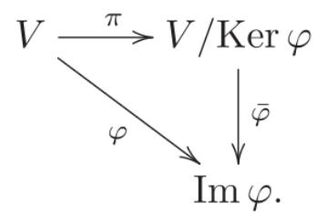
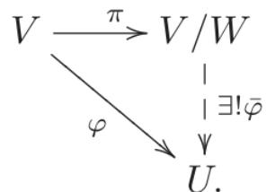
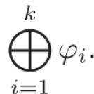

§8.1 从同态到线性映射在 2.3 节中我们引入了代数系统的概念, 并对于不同的二元运算得到了群、环、域等重要概念. 在 4.1 节中我们进一步引入了含幺环上的左模以及域上的线性空间. 到目前为止我们对这些代数结构的研究仅限于对其每个个体单独的研究. 如同一个社会, 我们不仅需要了解每个个体的特点, 更重要的是要了解不同个体之间的关系. 由此观点出发, 一个重要的任务是研究具有同一类代数结构的不同个体之间的关系, 即我们现在将要引入的同态的概念.
设代数系统 ( S , ∘ 1 , ∘ 2 , ⋯ , ∘ k ) (S,\circ_{1},\circ_{2},\cdots,\circ_{k}) ( T , ∘ 1 ′ , ∘ 2 ′ , ⋯ , ∘ k ′ ) (T,\circ_{1}^{\prime},\circ_{2}^{\prime},\cdots,\circ_{k}^{\prime}) φ : S → T \varphi:S\to T
则称 φ \varphi ( S , ∘ 1 , ∘ 2 , ⋯ , ∘ k ) (S,\circ_{1},\circ_{2},\cdots,\circ_{k}) ( T , ∘ 1 ′ , ∘ 2 ′ , ⋯ , ∘ k ′ ) (T,\circ_{1}^{\prime},\circ_{2}^{\prime},\cdots,\circ_{k}^{\prime}) φ \varphi ( S , ∘ 1 , ∘ 2 , ⋯ , ∘ k ) (S,\circ_{1},\circ_{2},\cdots,\circ_{k})
若同态 φ : S → T \varphi : S \to T φ \varphi S S T T φ : S ≅ T \varphi : S \cong T S ≅ φ T S \stackrel{\varphi}{\cong} T S S T T S = T S = T φ \varphi S S
( S , ∘ 1 , ∘ 2 , ⋯ , ∘ k ) (S, \circ_{1}, \circ_{2}, \cdots, \circ_{k}) i d S id_{S} ( S , ∘ 1 , ∘ 2 , ⋯ , ∘ k ) (S,\circ_{1},\circ_{2},\cdots,\circ_{k}) 上述讨论亦可以推广到定义 4.1.1 中某个含幺环 R 的左模上. 我们下面对群、模 (特别地对线性空间) 以及代数给出其同态的具体定义.
定义 8.1.1 (i) 对群 ( G , · ) (G,\cdot) ( H , · ) (H,\cdot) φ : G → H \varphi: G \to H 概念定义 定义 8.1.1 (i) 对群 ( G , · ) (G,\cdot) ( H , · ) (H,\cdot) φ : G → H \varphi: G \to H φ ( a b ) = φ ( a ) φ ( b ) \varphi(ab) = \varphi(a)\varphi(b) ∀ a , b ∈ G \forall a, b \in G φ \varphi φ \varphi
若群同态 φ : G → H \varphi: G \to H φ \varphi G G H H φ : G ≅ H \varphi: G \cong H G G H H G G G G
设 R R M M N N R R φ : M → N \varphi: M \to N M M N N φ ( r m ) = r φ ( m ) \varphi(rm) = r\varphi(m) ∀ r ∈ R \forall r \in R m ∈ M m \in M φ \varphi M M N N R R φ \varphi 若左 R R φ : M → N \varphi: M \to N φ \varphi M M N N R R φ : M ≅ N \varphi: M \cong N R R M M N N R R M M R R
特别地, 当 R = F R = F φ \varphi F F V V W W F F φ \varphi V V W W F F V = W V = W V V F F φ \varphi V V F F F F φ : V → W \varphi: V \to W φ \varphi V V W W F F F F φ : V ≅ W \varphi: V \cong W V V W W F F F F V V F F V V F F
为了本章中后文的需要, 我们这里再引入代数同态的定义. 一般的环同态理论将在《代数学 (三)》中详细介绍.
定义 8.1.2 设 A, A ′ A' φ : A → A ′ \varphi: A \to A' 概念定义 定义 8.1.2 设 A, A ′ A' φ : A → A ′ \varphi: A \to A' φ ( 1 A ) = 1 A ′ \varphi(1_A) = 1_{A'} φ ( a b ) = φ ( a ) φ ( b ) , ∀ a , b ∈ A \varphi(ab) = \varphi(a)\varphi(b), \forall a, b \in A φ \varphi A ′ A' φ \varphi φ \varphi A ′ A' φ : A ≅ A ′ \varphi: A \cong A' A ′ A'
image
命题 8.1.1 若 G, H 是群, φ : G → H \varphi: G \rightarrow H 命题 命题 8.1.1 若 G, H 是群, φ : G → H \varphi: G \rightarrow H φ ( e G ) = e H , φ ( a − 1 ) = φ ( a ) − 1 , ∀ a ∈ G . \varphi(e_{G}) = e_{H}, \varphi(a^{-1}) = \varphi(a)^{-1}, \forall a \in G.
证明 任取 a ∈ G a \in G φ ( e G ) φ ( a ) = φ ( e G a ) = φ ( a ) \varphi(e_G)\varphi(a) = \varphi(e_G a) = \varphi(a) 证明 证明 任取 a ∈ G a \in G φ ( e G ) φ ( a ) = φ ( e G a ) = φ ( a ) \varphi(e_G)\varphi(a) = \varphi(e_G a) = \varphi(a) φ ( e G ) = e H \varphi(e_G) = e_H φ ( a ) φ ( a − 1 ) = φ ( a a − 1 ) = φ ( e G ) = e H \varphi(a)\varphi(a^{-1}) = \varphi(aa^{-1}) = \varphi(e_G) = e_H φ ( a − 1 ) = φ ( a ) − 1 \varphi(a^{-1}) = \varphi(a)^{-1}
各类同态及线性空间之间的线性映射是代数学中的基本概念, 线性变换是其重要特例. 从本章开始, 我们讨论线性映射以及线性变换的基本性质. 为了更清楚地理解线性空间之间的线性映射, 由定义 8.1.1 不难得到如下结论, 证明留作练习.
命题 8.1.2 设 V, W 是域 F 上的线性空间. 对映射 φ : V → W \varphi: V \rightarrow W 命题 命题 8.1.2 设 V, W 是域 F 上的线性空间. 对映射 φ : V → W \varphi: V \rightarrow W
φ \varphi F F φ ( u + v ) = φ ( u ) + φ ( v ) , φ ( a u ) = a φ ( u ) , ∀ a ∈ F , u , v ∈ V ; \varphi(u+v)=\varphi(u)+\varphi(v),\varphi(au)=a\varphi(u),\forall a\in F,u,v\in V; φ ( a u + b v ) = a φ ( u ) + b φ ( v ) , ∀ a , b ∈ F , u , v ∈ V ; \varphi (au + bv) = a\varphi (u) + b\varphi (v),\forall a,b\in F,u,v\in V; φ ( a u + v ) = a φ ( u ) + φ ( v ) , ∀ a ∈ F , u , v ∈ V . \varphi(au + v) = a\varphi(u) + \varphi(v), \forall a \in F, u, v \in V. 由命题 8.1.1 或命题 8.1.2, 对 F-线性映射 φ : V → W \varphi: V \rightarrow W
例 8.1.1 由命题 4.5.4, 域 F 上的 n 阶可逆方阵在矩阵乘法下构成一般线性群 G L n ( F ) \mathrm{GL}_{n}(F) 经典例题 例 8.1.1 由命题 4.5.4, 域 F 上的 n 阶可逆方阵在矩阵乘法下构成一般线性群 G L n ( F ) \mathrm{GL}_{n}(F)
是群同态: 由定理 7.3.3, 对 A , B ∈ G L n ( F ) A, B \in \mathrm{GL}_n(F) | A B | = | A | | B | |AB| = |A||B|
例8.1.2 二元集 { ± 1 } \{\pm 1\} 经典例题 例8.1.2 二元集 { ± 1 } \{\pm 1\}
是群同态, 其中 τ ( σ ) \tau(\sigma) σ ( 1 ) σ ( 2 ) ⋯ σ ( n ) \sigma(1)\sigma(2)\cdots\sigma(n)
例 8.1.3 若 V, W 是域 F 上线性空间, 则常值映射 0 : V → W , v ↦ 0 0: V \rightarrow W, v \mapsto 0 经典例题 例 8.1.3 若 V, W 是域 F 上线性空间, 则常值映射 0 : V → W , v ↦ 0 0: V \rightarrow W, v \mapsto 0
例 8.1.4 (i)… 经典例题
例 8.1.4 (i) φ 1 : ℝ 3 → ℝ 2 , ( x y z ) ↦ ( x y ) \varphi_{1}:\mathbb{R}^{3}\to\mathbb{R}^{2},\quad\begin{pmatrix}x\\y\\z\end{pmatrix}\mapsto\begin{pmatrix}x\\y\end{pmatrix}
φ 2 : ℝ 3 → ℝ 3 , ( x y z ) ↦ ( x y 0 ) \varphi_{2}:\mathbb{R}^{3}\to \mathbb{R}^{3},\left( \begin{array}{c}x\\ y\\ z \end{array} \right)\mapsto \left( \begin{array}{c}x\\ y\\ 0 \end{array} \right)
例8.1.5 域 F F F [ x ] F[x] F F 经典例题 例8.1.5 域 F F F [ x ] F[x] F F
是 F-线性映射, 其中 f ′ ( x ) f'(x)
(i) 令 T = { ( a − b b a ) a r r a y | a , b ∈ ℝ T = \left\{\begin{array}{l} \left( \begin{array}{cc} a & -b \\ b & a \end{array} \right) \end{array} \right| a, b \in \mathbb{R} T T T → ℂ × T \to \mathbb{C}^{\times} ( a − b b a ) ↦ a + b i \left( \begin{array}{cc} a & -b \\ b & a \end{array} \right) \mapsto a + bi 令 S 1 = { z ∈ ℂ ∣ | z | = 1 } S^1 = \{z \in \mathbb{C} \mid |z| = 1\} K = { ( cos φ − sin φ sin φ cos φ ) | 0 ≤ φ < 2 π } K = \left\{\left( \begin{array}{cc}\cos \varphi & -\sin \varphi \\ \sin \varphi & \cos \varphi \end{array} \right)\middle |0 \leqslant \varphi < 2\pi \right\} K K 保持乘法运算，并给出一个群同构.
设 V , W V, W F F φ : V → W \varphi: V \to W φ \varphi V V φ \varphi 下面的映射中, 哪些是线性映射, 哪些是线性变换? φ : V → V , v ↦ v + v 0 \varphi: V \rightarrow V, v \mapsto v + v_{0} v 0 ∈ V v_{0} \in V φ : F [ x ] → F \varphi : F[x] \to F f ( x ) ↦ f ( x 0 ) f(x) \mapsto f(x_0) x 0 ∈ F x_0 \in F φ : F 2 → F 2 \varphi : F^2 \to F^2 ( a , b ) ↦ ( a 2 , a − b ) (a, b) \mapsto (a^2, a - b) φ : F m × n → F m × n , X ↦ A X B + C \varphi : F^{m \times n} \to F^{m \times n}, X \mapsto A X B + C A ∈ F m × m , B ∈ F n × n , C ∈ F m × n A \in F^{m \times m}, B \in F^{n \times n}, C \in F^{m \times n} φ : ℂ → ℂ \varphi : \mathbb{C} \to \mathbb{C} x ↦ x ¯ x \mapsto \bar{x} ℂ \mathbb{C} ℂ \mathbb{C} 设 α 1 , α 2 , ⋯ , α n \alpha_{1},\alpha_{2},\cdots,\alpha_{n} φ \varphi φ \varphi φ ( α 1 ) , φ ( α 2 ) , ⋯ , φ ( α n ) \varphi(\alpha_{1}),\varphi(\alpha_{2}),\cdots,\varphi(\alpha_{n}) 若域 F F R 1 R_{1} R 2 R_{2} R 1 R_{1} R 2 R_{2} F F F [ x ] F[x] F [ y ] F[y] F [ x ] ≅ F [ y ] F[x] \cong F[y] §8.2 线性映射空间与积空间(一) 线性映射空间
设 V , W V, W F F Hom F ( V , W ) \operatorname{Hom}_F(V, W) V V W W F F Hom F ( V , W ) \operatorname{Hom}_F(V, W) Hom F ( V , W ) \operatorname{Hom}_F(V, W) F F
设 φ , ψ ∈ Hom F ( V , W ) , c ∈ F \varphi, \psi \in \operatorname{Hom}_F(V, W), c \in F V V W W
不难验证 φ + ψ , c φ ∈ H o m F ( V , W ) \varphi + \psi, c\varphi \in \mathrm{Hom}_F(V, W) φ \varphi − φ = ( − 1 ) φ -\varphi = (-1)\varphi
定理 8.2.1 H o m F ( V , W ) \mathrm{Hom}_{F}(V,W) 核心定理 定理 8.2.1 H o m F ( V , W ) \mathrm{Hom}_{F}(V,W)
若 U U F F φ ∈ H o m F ( V , W ) \varphi \in \mathrm{Hom}_F(V,W) ψ ∈ H o m F ( W , U ) \psi \in \mathrm{Hom}_F(W,U) ψ ∘ φ : V → U \psi \circ \varphi: V \to U F F
称为线性映射的复合或乘法运算. 可以验证, 线性映射的乘法满足结合律和对线性映射加法的左 (右) 分配律.
当 V = W V = W End F ( V ) = Hom F ( V , V ) \operatorname{End}_F(V) = \operatorname{Hom}_F(V, V) V V F F End F ( V ) \operatorname{End}_F(V) i d V \mathrm{id}_V
定理 8.2.2 对域 F 上的线性空间 V, E n d F ( V ) \mathrm{End}_{F}(V) 核心定理 定理 8.2.2 对域 F 上的线性空间 V, E n d F ( V ) \mathrm{End}_{F}(V)
证明 由定理 8.2.1, End F ( V ) \operatorname{End}_{F}(V) 证明 证明 由定理 8.2.1, End F ( V ) \operatorname{End}_{F}(V) φ , φ ′ , ψ ∈ End F ( V ) , v ∈ V \varphi, \varphi', \psi \in \operatorname{End}_{F}(V), v \in V ( φ + φ ′ ) ∘ ψ ( v ) = φ ∘ ψ ( v ) + φ ′ ∘ ψ ( v ) (\varphi + \varphi') \circ \psi(v) = \varphi \circ \psi(v) + \varphi' \circ \psi(v)
因此线性映射的复合满足分配律. 这表明 End F ( V ) \operatorname{End}_F(V) i d V \mathrm{id}_V
因此 End F ( V ) \operatorname{End}_{F}(V)
特别地, 有 φ ∈ E n d F ( V ) \varphi \in \mathrm{End}_F(V) φ k = φ ∘ φ ∘ ⋯ ∘ φ ⏟ k 个 \varphi^k = \underbrace{\varphi \circ \varphi \circ \cdots \circ \varphi}_{k\text{个}} k k φ 0 = i d V \varphi^0 = \mathrm{id}_V f ( x ) = a n x n + a n − 1 x n − 1 + … + a 1 x + a 0 ∈ F [ x ] f(x) = a^n x^n + a_{n-1}x^{n-1} + \dots + a_1x + a_0 \in F[x]
下面的例子说明线性映射的乘法和矩阵的乘法一样不具备交换律.
例 8.2.1 设 V = R 3 V = R^{3} e 1 , e 2 , e 3 e_{1}, e_{2}, e_{3} 经典例题 例 8.2.1 设 V = R 3 V = R^{3} e 1 , e 2 , e 3 e_{1}, e_{2}, e_{3} φ , ψ ∈ H o m ℝ ( V , V ) \varphi, \psi \in \mathrm{Hom}_{\mathbb{R}}(V, V) φ ( v ) \varphi(v) ψ ( v ) \psi(v) v ∈ V v \in V 90 ∘ 90^{\circ}
因此 φ ∘ ψ ≠ ψ ∘ φ \varphi \circ \psi \neq \psi \circ \varphi
(二) 积空间
现在我们给出一种方法, 由已有的线性空间构造新的线性空间. 设 V 1 , V 2 , ⋯ , V k V_{1}, V_{2}, \cdots, V_{k} k ≥ 2 k \geqslant 2 V = V 1 × V 2 × ⋯ × V k V = V_{1} \times V_{2} \times \cdots \times V_{k} V 1 , V 2 , ⋯ , V k V_{1}, V_{2}, \cdots, V_{k}
设 ( u 1 , u 2 , ⋯ , u k ) , ( v 1 , v 2 , ⋯ , v k ) ∈ V , a ∈ F . (u_{1},u_{2},\cdots,u_{k}),(v_{1},v_{2},\cdots,v_{k})\in V,a\in F.
其中 u i + v i u_{i} + v_{i} a v i av_{i} V i V_{i} V 1 , V 2 , ⋯ , V k V_{1}, V_{2}, \cdots, V_{k} ∏ i = 1 k V i \prod_{i=1}^{k} V_{i}
例 8.2.2 R n R^{n} 经典例题 例 8.2.2 R n R^{n}
积空间 V 1 × V 2 × ⋯ × V k V_{1} \times V_{2} \times \cdots \times V_{k} V i V_{i}
显然 p i p_{i} V 1 × V 2 × ⋯ × V k V_{1} \times V_{2} \times \cdots \times V_{k} V i V_{i}
每个 V i V_{i} V 1 × V 2 × ⋯ × V k V_{1} \times V_{2} \times \cdots \times V_{k}
令 V i ′ = Im q i V_{i}^{\prime} = \operatorname{Im} q_{i} q i q_{i} V i V_{i} V i ′ V_{i}^{\prime} V i ′ V_{i}^{\prime} V 1 × V 2 × ⋯ × V k V_{1} \times V_{2} \times \cdots \times V_{k}
命题 8.2.1… 命题
命题 8.2.1 V 1 × V 2 × ⋯ × V k = V 1 ′ ⊕ V 2 ′ ⊕ ⋯ ⊕ V k ′ . V_{1} \times V_{2} \times \cdots \times V_{k} = V_{1}^{\prime} \oplus V_{2}^{\prime} \oplus \cdots \oplus V_{k}^{\prime}.
证明 只需证明 V 1 × V 2 × ⋯ × V k V_{1} \times V_{2} \times \cdots \times V_{k} 证明 证明 只需证明 V 1 × V 2 × ⋯ × V k V_{1} \times V_{2} \times \cdots \times V_{k} ( v 1 , v 2 , ⋯ , v k ) (v_{1}, v_{2}, \cdots, v_{k}) V 1 ′ , V 2 ′ , ⋯ , V k ′ V_{1}^{\prime}, V_{2}^{\prime}, \cdots, V_{k}^{\prime}
且分解方式唯一.
习题 习题 8.2设 V, W 为 F-线性空间, α 1 , α 2 , ⋯ , α n \alpha_{1}, \alpha_{2}, \cdots, \alpha_{n} w 1 , w 2 , ⋯ , w n w_{1}, w_{2}, \cdots, w_{n} φ ∈ Hom F ( V , W ) \varphi \in \operatorname{Hom}_{F}(V, W) φ ( α j ) = w j , j = 1 , 2 , ⋯ , n \varphi(\alpha_{j}) = w_{j}, j = 1, 2, \cdots, n 设 φ , ψ \varphi, \psi V V φ ψ − ψ φ = i d V \varphi \psi - \psi \varphi = \mathrm{id}_V k k φ k ψ − ψ φ k = k φ k − 1 \varphi^k \psi - \psi \varphi^k = k \varphi^{k-1} 设 φ , ψ \varphi, \psi φ 2 = φ , ψ 2 = ψ \varphi^{2} = \varphi, \psi^{2} = \psi 若域 F F φ + ψ \varphi + \psi φ ψ = 0 \varphi \psi = 0 若 φ ψ = ψ φ \varphi \psi = \psi \varphi φ + ψ − φ ψ \varphi + \psi - \varphi \psi 设 φ \varphi v ∈ V v \in V φ k − 1 ( v ) ≠ 0 \varphi^{k-1}(v) \neq 0 φ k ( v ) = 0 \varphi^{k}(v) = 0 v , φ ( v ) , ⋯ , φ k − 1 ( v ) v, \varphi(v), \cdots, \varphi^{k-1}(v) 设 f ( x ) , g ( x ) , h ( x ) ∈ F [ x ] f(x), g(x), h(x) \in F[x] h ( x ) = f ( x ) g ( x ) h(x) = f(x)g(x) φ ∈ End F ( V ) \varphi \in \operatorname{End}_F(V) h ( φ ) = f ( φ ) g ( φ ) h(\varphi) = f(\varphi)g(\varphi) §8.3 线性空间的同构分类我们首先来理解线性同构. 由命题 8.1.2 容易证明若 v 1 , v 2 , ⋯ , v r ∈ V v_{1}, v_{2}, \cdots, v_{r} \in V φ ( v 1 ) , φ ( v 2 ) , ⋯ , φ ( v r ) ∈ W \varphi(v_{1}), \varphi(v_{2}), \cdots, \varphi(v_{r}) \in W v 1 , v 2 , ⋯ , v r ∈ V v_{1}, v_{2}, \cdots, v_{r} \in V φ ( v 1 ) , φ ( v 2 ) , ⋯ , φ ( v r ) ∈ W \varphi(v_{1}), \varphi(v_{2}), \cdots, \varphi(v_{r}) \in W φ \varphi v 1 , v 2 , ⋯ , v r ∈ V v_{1}, v_{2}, \cdots, v_{r} \in V φ ( v 1 ) , φ ( v 2 ) , ⋯ , φ ( v r ) ∈ W \varphi(v_{1}), \varphi(v_{2}), \cdots, \varphi(v_{r}) \in W
定理 8.3.1 设 V, W 为域 F 上的线性空间, φ ∈ H o m F ( V , W ) \varphi \in \mathrm{Hom}_{F}(V, W) φ \varphi 核心定理 定理 8.3.1 设 V, W 为域 F 上的线性空间, φ ∈ H o m F ( V , W ) \varphi \in \mathrm{Hom}_{F}(V, W) φ \varphi v 1 , v 2 , ⋯ , v r ∈ V v_{1}, v_{2}, \cdots, v_{r} \in V φ ( v 1 ) , φ ( v 2 ) , ⋯ , φ ( v r ) ∈ W \varphi(v_{1}), \varphi(v_{2}), \cdots, \varphi(v_{r}) \in W
证明 充分性对任意线性映射都成立. 下面证明必要性. 证明
证明 充分性对任意线性映射都成立. 下面证明必要性.
设 c 1 , c 2 , ⋯ , c r ∈ F c_{1}, c_{2}, \cdots, c_{r} \in F c 1 φ ( v 1 ) + c 2 φ ( v 2 ) + ⋯ + c r φ ( v r ) = 0 c_{1}\varphi(v_{1}) + c_{2}\varphi(v_{2}) + \cdots + c_{r}\varphi(v_{r}) = 0
由于 φ \varphi c 1 v 1 + c 2 v 2 + ⋯ + c r v r = 0 c_{1}v_{1} + c_{2}v_{2} + \cdots + c_{r}v_{r} = 0 v 1 , v 2 , ⋯ , v r v_{1}, v_{2}, \cdots, v_{r} c i = 0 , i = 1 , 2 , ⋯ , r c_{i} = 0, i = 1, 2, \cdots, r φ ( v 1 ) , φ ( v 2 ) , ⋯ , φ ( v r ) \varphi(v_{1}), \varphi(v_{2}), \cdots, \varphi(v_{r})
特别地, 若 φ : V → W \varphi: V \to W φ − 1 : W → V \varphi^{-1}: W \to V
类似地, 对一般的代数结构, 同构的代数对象具有一致的代数性质. 代数结构的同构给出了这类代数对象之间的一个等价关系, 其等价类也称为同构类, 例如同构的线性空间即构成了线性同构的一个同构类. 同构在代数学中有着重要的地位, 经常体现了某种所谓的 “同构不变量”, 这将在后面的章节中逐步展开讨论.
作为特例, 我们先由映射及其复合说明群同构和线性空间同构均为等价关系, 然后用线性同构给出线性空间的一个等价分类.
性质 8.3.1 (对称性) (i) 若 φ : G → H \varphi: G \to H φ − 1 : H → G \varphi^{-1}: H \to G 性质 性质 8.3.1 (对称性) (i) 若 φ : G → H \varphi: G \to H φ − 1 : H → G \varphi^{-1}: H \to G
若 φ : V → W \varphi: V \to W F F φ − 1 : W → V \varphi^{-1}: W \to V
证明 (i) 由于 φ − 1 \varphi^{-1} φ − 1 \varphi^{-1} a , b ∈ G a, b \in G 证明 证明 (i) 由于 φ − 1 \varphi^{-1} φ − 1 \varphi^{-1} a , b ∈ G a, b \in G
因此 φ − 1 ( a b ) = φ − 1 ( a ) φ − 1 ( b ) \varphi^{-1}(ab) = \varphi^{-1}(a)\varphi^{-1}(b)
类似地, 只需证明 φ − 1 \varphi^{-1} a ∈ F a \in F u , v ∈ V u, v \in V 因此 φ − 1 ( a u + v ) = a φ − 1 ( u ) + φ − 1 ( v ) \varphi^{-1}(au + v) = a\varphi^{-1}(u) + \varphi^{-1}(v) φ − 1 \varphi^{-1}
性质 8.3.2 (传递性) (i) 群同构的复合是群同构; (ii) 线性同构的复合是线性同构. 性质
性质 8.3.2 (传递性) (i) 群同构的复合是群同构; (ii) 线性同构的复合是线性同构.
证明 (i) 设 φ : G → H \varphi: G \to H ψ : H → K \psi: H \to K 证明 证明 (i) 设 φ : G → H \varphi: G \to H ψ : H → K \psi: H \to K ψ φ : G → K \psi\varphi: G \to K ψ φ \psi\varphi a , b ∈ G a, b \in G ψ ( φ ( a b ) ) = ψ ( φ ( a ) φ ( b ) ) = ψ ( φ ( a ) ) ψ ( φ ( b ) ) . \psi(\varphi(ab)) = \psi(\varphi(a)\varphi(b)) = \psi(\varphi(a))\psi(\varphi(b)).
证明类似. 设 φ : V → W \varphi: V \to W ψ : W → U \psi: W \to U ψ φ : V → U \psi\varphi: V \to U ψ φ \psi\varphi ψ φ : V → W \psi\varphi: V \to W □ \square 任意群 (线性空间) 的恒等映射显然是群同构 (线性同构), 即自反性成立. 因此由性质 8.3.1 和性质 8.3.2, 同构作为群 (线性空间) 之间的一种关系, 具有对称性、传递性和自反性, 即是一种等价关系. 在这种等价关系之下, 我们可以给出有限维线性空间根据维数的一种分类. 首先有
引理 8.3.1 设 V 是域 F 上的 n 维线性空间… 命题/引理
引理 8.3.1 设 V 是域 F 上的 n 维线性空间, α = { α 1 , α 2 , ⋯ , α n } \alpha = \{\alpha_{1}, \alpha_{2}, \cdots, \alpha_{n}\}
是线性同构, 其中 [ v ] α [v]_{\alpha} α \alpha
证明 由事实 5.2.1 知 [ · ] α [\cdot]_{\alpha} [ · ] α [\cdot]_{\alpha} 证明 证明 由事实 5.2.1 知 [ · ] α [\cdot]_{\alpha} [ · ] α [\cdot]_{\alpha} a ∈ F a \in F u = x 1 α 1 + x 2 α 2 + ⋯ + x n α n , v = y 1 α 1 + y 2 α 2 + ⋯ + y n α n u = x_{1}\alpha_{1} + x_{2}\alpha_{2} + \cdots + x_{n}\alpha_{n}, v = y_{1}\alpha_{1} + y_{2}\alpha_{2} + \cdots + y_{n}\alpha_{n} x i , y i ∈ F , i = 1 , 2 , ⋯ , n x_{i}, y_{i} \in F, i = 1, 2, \cdots, n a u + v = ( a x 1 + y 1 ) α 1 + ( a x 2 + y 2 ) α 2 + ⋯ + ( a x n + y n ) α n au + v = (ax_{1} + y_{1})\alpha_{1} + (ax_{2} + y_{2})\alpha_{2} + \cdots + (ax_{n} + y_{n})\alpha_{n}
由命题 8.1.2 知 [ · ] α [\cdot]_{\alpha}
进一步地, 我们可得
定理 8.3.2 设 V 和 W 是域 F 上的线性空间, 维数分别是 n 和 m, 那么 V ≅ W V \cong W 核心定理 定理 8.3.2 设 V 和 W 是域 F 上的线性空间, 维数分别是 n 和 m, 那么 V ≅ W V \cong W
证明 充分性. 若 n = m n = m V ≅ F n V \cong F^n W ≅ F n W \cong F^n 证明 证明 充分性. 若 n = m n = m V ≅ F n V \cong F^n W ≅ F n W \cong F^n V ≅ W V \cong W
必要性. 设有同构 φ : V ≅ W \varphi: V \cong W V V α 1 , α 2 , ⋯ , α n \alpha_{1}, \alpha_{2}, \cdots, \alpha_{n} φ ( α 1 ) \varphi(\alpha_{1}) φ ( α 2 ) , ⋯ , φ ( α n ) ∈ W \varphi(\alpha_{2}), \cdots, \varphi(\alpha_{n}) \in W n ≤ m n \leqslant m m ≤ n m \leqslant n n = m n = m
由此我们可以对有限维线性空间根据其维数进行分类, 具有相同维数的线性空间属于同一等价类, 否则即属于不同的等价类. 在同一等价类中的线性空间, 即彼此同构的线性空间, 其向量组的线性关系在同构映射下不变. 因此若只涉及向量运算的代数性质而不考虑空间中向量的具体形式, 则对同构的线性空间可以不加区别. 特别地, 任意有限维线性空间均等同于某个 F n F^n n n
例 8.3.1 设 a 1 , a 2 , ⋯ , a n + 1 a_{1}, a_{2}, \cdots, a_{n+1} 经典例题 例 8.3.1 设 a 1 , a 2 , ⋯ , a n + 1 a_{1}, a_{2}, \cdots, a_{n+1}
证明 请读者自行验证 φ \varphi φ \varphi 证明 证明 请读者自行验证 φ \varphi φ \varphi
与注 8.1.1 (iii) 类似, A u t F ( V ) = { φ ∈ E n d F ( V ) ∣ φ \mathrm{Aut}_{F}(V)=\{\varphi\in\mathrm{End}_{F}(V)\mid\varphi A u t F ( V ) \mathrm{Aut}_{F}(V) G L ( V ) \mathrm{GL}(V) G L ( V ) = A u t F ( V ) \mathrm{GL}(V)=\mathrm{Aut}_{F}(V) E n d F ( V ) \mathrm{End}_{F}(V)
如何理解自同构和自同构群的意义？首先可逆线性变换 φ ∈ G L ( V ) \varphi \in \mathrm{GL}(V) φ \varphi α 1 , α 2 , ⋯ , α n \alpha_{1}, \alpha_{2}, \cdots, \alpha_{n} φ ( α 1 ) , φ ( α 2 ) , ⋯ , φ ( α n ) \varphi(\alpha_{1}), \varphi(\alpha_{2}), \cdots, \varphi(\alpha_{n}) G L ( V ) \mathrm{GL}(V) α \alpha β \beta φ ∈ G L ( V ) \varphi \in \mathrm{GL}(V) α \alpha β \beta G L ( V ) \mathrm{GL}(V)
习题 习题 8.3将复数集 ℂ \mathbb{C} ℂ \mathbb{C} ℝ 2 \mathbb{R}^2 φ \varphi 1 + i 1 + i 1 − i 1 - i 对例 4.1.7 中的实线性空间 R + R_{+} R + R_{+} 对域 F F a a V a = { f ( x ) ∈ F [ x ] ∣ f ( a ) = 0 } V_{a} = \{f(x) \in F[x] \mid f(a) = 0\} V a V_{a} F [ x ] F[x] a , b ∈ F a, b \in F V a V_{a} V b V_{b} 设 V V F F n n W W F F n n V V W W §8.4 像空间与核空间及其关系(一) 概念与基本性质
我们已经看到线性映射体现了线性空间之间的关系, 因此线性映射非常重要. 如何确定一个线性映射或作为其特例的线性变换? 事实上, 线性映射在很大程度上取决于由其产生的两个子空间——像空间与核空间.
设 φ : V → W \varphi: V \to W F F φ \varphi Im φ = { φ ( v ) ∣ v ∈ V } \operatorname{Im} \varphi = \{\varphi(v) \mid v \in V\}
定义 8.4.1 (i) 设 φ : G → H \varphi: G \to H e H e_{H} φ \varphi 概念定义 定义 8.4.1 (i) 设 φ : G → H \varphi: G \to H e H e_{H} φ \varphi φ \varphi Ker φ = φ − 1 ( e H ) = { g ∈ G ∣ φ ( g ) = e H } \operatorname{Ker}\varphi = \varphi^{-1}(e_{H}) = \{g \in G \mid \varphi(g) = e_{H}\}
设 φ : V → W \varphi: V \to W F F W W φ \varphi φ \varphi Ker φ = φ − 1 ( 0 ) = { v ∈ V ∣ φ ( v ) = 0 } \operatorname{Ker} \varphi = \varphi^{-1}(\mathbf{0}) = \{v \in V \mid \varphi(v) = \mathbf{0}\} 由定义不难看出, 线性映射 φ : V → W \varphi: V \to W φ \varphi V V W W
为方便起见, 我们先给出一个群的非空子集是子群的充要条件.
引理 8.4.1 群 G 的非空子集 A 是 G 的子群当且仅当对任意 a , b ∈ A a, b \in A a b − 1 ∈ A ab^{-1} \in A 命题/引理 引理 8.4.1 群 G 的非空子集 A 是 G 的子群当且仅当对任意 a , b ∈ A a, b \in A a b − 1 ∈ A ab^{-1} \in A
证明 由定义 2.3.4(i)(ii), A 是 G 的子群当且仅当 A 对乘法和取逆运算封闭. 证明
证明 由定义 2.3.4(i)(ii), A 是 G 的子群当且仅当 A 对乘法和取逆运算封闭.
若 A A a , b ∈ A a, b \in A b − 1 ∈ A b^{-1} \in A a b − 1 ∈ A ab^{-1} \in A a , b ∈ A a, b \in A a b − 1 ∈ A ab^{-1} \in A a = e G a = e_G b − 1 ∈ A b^{-1} \in A A A a , b ∈ A a, b \in A a b = a ( b − 1 ) − 1 ∈ A ab = a(b^{-1})^{-1} \in A A A A A
命题 8.4.1 (i) 若 φ : G → H \varphi: G \to H Ker φ \operatorname{Ker} \varphi 命题 命题 8.4.1 (i) 若 φ : G → H \varphi: G \to H Ker φ \operatorname{Ker} \varphi Im φ \operatorname{Im} \varphi
若 φ : V → W \varphi: V \to W F F Ker φ \operatorname{Ker} \varphi V V Im φ \operatorname{Im} \varphi W W
证明 (i) 对 a , b ∈ Ker φ a, b \in \operatorname{Ker} \varphi 证明 证明 (i) 对 a , b ∈ Ker φ a, b \in \operatorname{Ker} \varphi φ ( a b − 1 ) = φ ( a ) φ ( b ) − 1 = e H \varphi(ab^{-1}) = \varphi(a)\varphi(b)^{-1} = e_H a b − 1 ∈ Ker φ ab^{-1} \in \operatorname{Ker} \varphi Ker φ \operatorname{Ker} \varphi G G φ ( a ) , φ ( b ) ∈ Im φ \varphi(a), \varphi(b) \in \operatorname{Im} \varphi a , b ∈ G a, b \in G φ ( a ) φ ( b ) − 1 = φ ( a b − 1 ) ∈ Im φ \varphi(a)\varphi(b)^{-1} = \varphi(ab^{-1}) \in \operatorname{Im} \varphi Im φ \operatorname{Im} \varphi H H
由 (i) 知 Ker φ \operatorname{Ker} \varphi Im φ \operatorname{Im} \varphi V V W W c ∈ F c \in F v ∈ Ker φ v \in \operatorname{Ker} \varphi φ ( c v ) = c φ ( v ) = c 0 = 0 \varphi(cv) = c \varphi(v) = c0 = 0 c v ∈ Ker φ cv \in \operatorname{Ker} \varphi Ker φ \operatorname{Ker} \varphi c ∈ F c \in F φ ( v ) ∈ Im φ \varphi(v) \in \operatorname{Im} \varphi v ∈ V v \in V c φ ( v ) = φ ( c v ) ∈ Im φ c \varphi(v) = \varphi(cv) \in \operatorname{Im} \varphi Im φ \operatorname{Im} \varphi 因此亦称线性映射 φ : V → W \varphi : V \to W Ker φ \operatorname{Ker} \varphi φ \varphi Im φ \operatorname{Im} \varphi V V W W φ \varphi Ker φ = V \operatorname{Ker} \varphi = V
命题 8.4.2 (i) 群同态 φ : G → H \varphi: G \to H Im φ = H \operatorname{Im}\varphi = H 命题 命题 8.4.2 (i) 群同态 φ : G → H \varphi: G \to H Im φ = H \operatorname{Im}\varphi = H Ker φ = { e G } \operatorname{Ker}\varphi = \{e_{G}\}
线性映射 φ : V → W \varphi: V \to W Im φ = W \operatorname{Im} \varphi = W Ker φ = { 0 } \operatorname{Ker} \varphi = \{\mathbf{0}\} φ \varphi g ∈ Ker φ g \in \operatorname{Ker} \varphi φ ( g ) = φ ( e G ) = e H \varphi(g) = \varphi(e_G) = e_H g = e G g = e_G Ker φ = { e G } \operatorname{Ker} \varphi = \{e_G\} Ker φ = { e G } \operatorname{Ker} \varphi = \{e_G\} a , b ∈ G a, b \in G φ ( a ) = φ ( b ) \varphi(a) = \varphi(b) φ ( a b − 1 ) = φ ( a ) φ ( b ) − 1 = e H \varphi(ab^{-1}) = \varphi(a)\varphi(b)^{-1} = e_H a b − 1 ∈ Ker φ ab^{-1} \in \operatorname{Ker} \varphi a b − 1 = e G ab^{-1} = e_G a = b a = b φ \varphi (ii) 由 (i) 即得.
由上述命题即知线性映射 φ : V → W \varphi: V \rightarrow W Im φ = W , Ker φ = { 0 } \operatorname{Im}\varphi = W, \operatorname{Ker}\varphi = \{\mathbf{0}\}
例 8.4.1 考虑 8.2 节中积空间 V = V 1 × V 2 × ⋯ × V k V = V_{1} \times V_{2} \times \cdots \times V_{k} 经典例题 例 8.4.1 考虑 8.2 节中积空间 V = V 1 × V 2 × ⋯ × V k V = V_{1} \times V_{2} \times \cdots \times V_{k} i = 1 , 2 , ⋯ , k i = 1, 2, \cdots, k p i : V → V i p_{i}: V \to V_{i} Im p i = V i \operatorname{Im} p_{i} = V_{i} Ker p i = V 1 × ⋯ × V i − 1 × { 0 } × V i + 1 × ⋯ × V k \operatorname{Ker} p_{i} = V_{1} \times \cdots \times V_{i-1} \times \{\mathbf{0}\} \times V_{i+1} \times \cdots \times V_{k} q i : V i → V q_{i}: V_{i} \to V Ker q i = { 0 } \operatorname{Ker} q_{i} = \{\mathbf{0}\} V i ′ = Im q i V_{i}' = \operatorname{Im} q_{i}
例8.4.2 例8.1.5中的求导映射 D : F [ x ] → F [ x ] \mathcal{D}: F[x] \to F[x] n n 经典例题 例8.4.2 例8.1.5中的求导映射 D : F [ x ] → F [ x ] \mathcal{D}: F[x] \to F[x] n n
若 F F Im D n = F [ x ] n − 1 \operatorname{Im} \mathcal{D}_n = F[x]_{n-1} D n \mathcal{D}_n Ker D n = F ≠ { 0 } \operatorname{Ker} \mathcal{D}_n = F \neq \{0\} D \mathcal{D} 若 F F p p D n \mathcal{D}_n Im D p + 1 = D p − 1 \operatorname{Im} \mathcal{D}_{p+1} = \mathcal{D}_{p-1} Ker D p + 1 = Span { 1 , x p } \operatorname{Ker} \mathcal{D}_{p+1} = \operatorname{Span}\{1, x^p\} Im D = Span { x n ∣ n ≢ p − 1 ( mod p ) } \operatorname{Im} \mathcal{D} = \operatorname{Span}\{x^n \mid n \not\equiv p - 1 (\bmod p)\} Ker D = F [ x p ] = Span { x p n ∣ n ∈ ℕ } \operatorname{Ker} \mathcal{D} = F[x^p] = \operatorname{Span}\{x^{pn} \mid n \in \mathbb{N}\} (二) 像空间与核空间的关系
上一小节我们引入了线性映射的像空间与核空间, 下面进一步讨论它们之间的关系.
设有 F F φ : V → W \varphi: V \to W w ∈ Im φ w \in \operatorname{Im} \varphi v ∈ V v \in V w = φ ( v ) w = \varphi(v)
其中 α i ∈ V , x i ∈ F , i = 1 , 2 , ⋯ , n . \alpha_{i}\in V,x_{i}\in F,i=1,2,\cdots,n.
由此易得
命题 8.4.3 若 φ : V → W \varphi: V \to W 命题 命题 8.4.3 若 φ : V → W \varphi: V \to W α 1 , α 2 , ⋯ , α n \alpha_{1}, \alpha_{2}, \cdots, \alpha_{n} Im φ = Span { φ ( α 1 ) , φ ( α 2 ) , ⋯ , φ ( α n ) } \operatorname{Im}\varphi = \operatorname{Span}\{\varphi(\alpha_{1}), \varphi(\alpha_{2}), \cdots, \varphi(\alpha_{n})\}
对线性映射 φ : V → W \varphi : V \to W dim Im φ \dim \operatorname{Im} \varphi φ \varphi rank φ \operatorname{rank} \varphi dim Ker φ \dim \operatorname{Ker} \varphi φ \varphi
定理 8.4.1 设 φ : V → W \varphi: V \to W dim V & l t ; + ∞ \dim V < +\infty 核心定理 定理 8.4.1 设 φ : V → W \varphi: V \to W dim V < + ∞ \dim V < +\infty Im φ \operatorname{Im}\varphi Ker φ \operatorname{Ker}\varphi
证明 由命题 8.4.3 知 dim Im φ & l t ; + ∞ \dim\operatorname{Im}\varphi < +\infty 证明 证明 由命题 8.4.3 知 dim Im φ < + ∞ \dim\operatorname{Im}\varphi < +\infty Im φ \operatorname{Im}\varphi β 1 , β 2 , ⋯ , β r \beta_{1}, \beta_{2}, \cdots, \beta_{r} r = dim Im φ r = \dim\operatorname{Im}\varphi α i ∈ V , φ ( α i ) = β i , i = 1 , 2 , ⋯ , r \alpha_{i} \in V, \varphi(\alpha_{i}) = \beta_{i}, i = 1, 2, \cdots, r Ker φ \operatorname{Ker}\varphi α r + 1 , α r + 2 , ⋯ , α r + s \alpha_{r+1}, \alpha_{r+2}, \cdots, \alpha_{r+s} s = dim Ker φ s = \dim\operatorname{Ker}\varphi α 1 , α 2 , ⋯ , α r + s \alpha_{1}, \alpha_{2}, \cdots, \alpha_{r+s}
对任意 v ∈ V v \in V φ ( v ) ∈ Im φ \varphi(v) \in \operatorname{Im} \varphi c 1 , c 2 , ⋯ , c r ∈ F c_{1}, c_{2}, \cdots, c_{r} \in F
这表明 v − c 1 α 1 − c 2 α 2 − ⋯ − c r α r ∈ Ker φ , v - c_{1}\alpha_{1} - c_{2}\alpha_{2} - \cdots - c_{r}\alpha_{r} \in \operatorname{Ker} \varphi, c r + 1 , c r + 2 , ⋯ , c r + s ∈ F c_{r+1}, c_{r+2}, \cdots, c_{r+s} \in F
即 v = c 1 α 1 + c 2 α 2 + ⋯ + c r + s α r + s v = c_{1}\alpha_{1} + c_{2}\alpha_{2} + \cdots + c_{r+s}\alpha_{r+s} V = Span { α 1 , α 2 , ⋯ , α r + s } V = \operatorname{Span}\{\alpha_{1}, \alpha_{2}, \cdots, \alpha_{r+s}\}
只需再证明 α 1 , α 2 , ⋯ , α r + s \alpha_{1},\alpha_{2},\cdots,\alpha_{r+s} c 1 , c 2 , ⋯ , c r + s ∈ F c_{1},c_{2},\cdots,c_{r+s}\in F
两边用 φ \varphi α r + 1 , α r + 2 , ⋯ , α r + s ∈ Ker φ \alpha_{r+1}, \alpha_{r+2}, \cdots, \alpha_{r+s} \in \operatorname{Ker} \varphi c 1 β 1 + c 2 β 2 + ⋯ + c r β r = 0 c_{1}\beta_{1} + c_{2}\beta_{2} + \cdots + c_{r}\beta_{r} = 0 β 1 , β 2 , ⋯ , β r \beta_{1}, \beta_{2}, \cdots, \beta_{r} c i = 0 , i = 1 , 2 , ⋯ , r c_{i} = 0, i = 1, 2, \cdots, r c r + 1 α r + 1 + c r + 2 α r + 2 + ⋯ + c r + s α r + s = 0 c_{r+1}\alpha_{r+1} + c_{r+2}\alpha_{r+2} + \cdots + c_{r+s}\alpha_{r+s} = 0 α r + 1 , α r + 2 , ⋯ , α r + s \alpha_{r+1}, \alpha_{r+2}, \cdots, \alpha_{r+s} c i = 0 , i = r + 1 , r + 2 , ⋯ , r + s c_{i} = 0, i = r + 1, r + 2, \cdots, r + s α 1 , α 2 , ⋯ , α r + s \alpha_{1}, \alpha_{2}, \cdots, \alpha_{r+s}
推论 8.4.1 若 φ : V → W \varphi: V \rightarrow W dim V & l t ; + ∞ \dim V < +\infty 推论 推论 8.4.1 若 φ : V → W \varphi: V \rightarrow W dim V < + ∞ \dim V < +\infty dim W ≤ dim V \dim W \leqslant \dim V
证明 由定理 8.4.1… 证明
证明 由定理 8.4.1, dim W = dim Im φ = dim V − dim Ker φ ≤ dim V \dim W = \dim \operatorname{Im} \varphi = \dim V - \dim \operatorname{Ker} \varphi \leqslant \dim V
单射和满射是两类重要的映射. 作为一个是满射但不是单射的线性映射的例子, 见例 8.4.2 (i) 中当域 F F
由定理 8.4.1 可得如下结论.
推论 8.4.2 设 φ : V → W \varphi: V \rightarrow W 推论 推论 8.4.2 设 φ : V → W \varphi: V \rightarrow W dim V = dim W < + ∞ \dim V = \dim W < +\infty φ \varphi φ \varphi φ \varphi
证明 显然只需证明 (i) ⇔ \Leftrightarrow 证明 证明 显然只需证明 (i) ⇔ \Leftrightarrow
那么由命题 8.4.2, φ \varphi dim Ker φ = 0 \dim \operatorname{Ker} \varphi = 0 dim Im φ = dim V = dim W \dim \operatorname{Im} \varphi = \dim V = \dim W Im φ = W \operatorname{Im} \varphi = W φ \varphi
事实上, 推论 8.4.2 只对有限维线性空间成立, 对无限维线性空间一般是不成立的. 例如, 设 V = W = ℝ [ x ] V = W = \mathbb{R}[x] g ( x ) ∈ ℝ [ x ] g(x) \in \mathbb{R}[x] deg g ( x ) ≥ 1 \deg g(x) \geqslant 1
是线性变换且是单射, 但不是满射.
需要指出, 虽然定理 8.4.1 中当 dim V < + ∞ \dim V < +\infty dim Im φ + dim Ker φ = dim V \dim \operatorname{Im} \varphi + \dim \operatorname{Ker} \varphi = \dim V Im φ + Ker φ = V \operatorname{Im} \varphi + \operatorname{Ker} \varphi = V W ≠ V W \neq V Im φ \operatorname{Im} \varphi Ker φ \operatorname{Ker} \varphi W = V W = V Im φ + Ker φ \operatorname{Im} \varphi + \operatorname{Ker} \varphi V V F F D : F [ x ] n → F [ x ] n \mathcal{D}: F[x]_n \to F[x]_n f ( x ) ↦ f ′ ( x ) f(x) \mapsto f'(x)
对线性变换 φ : V → V \varphi: V \to V Im φ + Ker φ = V \operatorname{Im} \varphi + \operatorname{Ker} \varphi = V Im φ ∩ Ker φ = { 0 } \operatorname{Im} \varphi \cap \operatorname{Ker} \varphi = \{\mathbf{0}\}
由此可得如下推论.
推论 8.4.3 设 V 是有限维线性空间, φ : V → V \varphi: V \to V 推论 推论 8.4.3 设 V 是有限维线性空间, φ : V → V \varphi: V \to V V = Im φ + Ker φ V = \operatorname{Im} \varphi + \operatorname{Ker} \varphi Im φ ∩ Ker φ = { 0 } \operatorname{Im} \varphi \cap \operatorname{Ker} \varphi = \{\mathbf{0}\} V = Im φ ⊕ Ker φ V = \operatorname{Im} \varphi \oplus \operatorname{Ker} \varphi
例 8.4.3 若 V 是有限维线性空间, φ : V → V \varphi: V \to V φ 2 = φ \varphi^{2} = \varphi 经典例题 例 8.4.3 若 V 是有限维线性空间, φ : V → V \varphi: V \to V φ 2 = φ \varphi^{2} = \varphi V = Im φ ⊕ Ker φ V = \operatorname{Im} \varphi \oplus \operatorname{Ker} \varphi
证明 由推论8.4.3, 只需证明… 证明
证明 由推论8.4.3, 只需证明 Im φ ∩ Ker φ = { 0 } \operatorname{Im} \varphi \cap \operatorname{Ker} \varphi = \{\mathbf{0}\} v ∈ Im φ ∩ Ker φ v \in \operatorname{Im} \varphi \cap \operatorname{Ker} \varphi v 0 ∈ V v_0 \in V v = φ ( v 0 ) , φ ( v ) = 0 v = \varphi(v_0), \varphi(v) = \mathbf{0} v = φ ( v 0 ) = φ 2 ( v 0 ) = φ ( v ) = 0 v = \varphi(v_0) = \varphi^2(v_0) = \varphi(v) = \mathbf{0}
习题 习题 8.4令 M = ( 1 2 0 3 ) ∈ ℝ 2 × 2 M = \begin{pmatrix} 1 & 2 \\ 0 & 3 \end{pmatrix} \in \mathbb{R}^{2 \times 2} φ : ℝ 2 × 2 → ℝ 2 × 2 \varphi: \mathbb{R}^{2 \times 2} \to \mathbb{R}^{2 \times 2} A ↦ A M − M A A \mapsto AM - MA Ker φ \operatorname{Ker} \varphi Im φ \operatorname{Im} \varphi 设 φ , ψ \varphi, \psi Im φ = Im ψ \operatorname{Im} \varphi = \operatorname{Im} \psi φ ψ = ψ , ψ φ = φ \varphi \psi = \psi, \psi \varphi = \varphi Ker φ = Ker ψ \operatorname{Ker} \varphi = \operatorname{Ker} \psi φ ψ = φ , ψ φ = ψ \varphi \psi = \varphi, \psi \varphi = \psi 设 φ 1 \varphi_{1} φ 2 \varphi_{2} φ 1 + φ 2 \varphi_{1} + \varphi_{2} φ 1 φ 2 = φ 2 φ 1 = 0 ; \varphi_{1}\varphi_{2} = \varphi_{2}\varphi_{1} = 0; φ 1 − φ 2 \varphi_{1} - \varphi_{2} φ 1 φ 2 = φ 2 φ 1 = φ 2 \varphi_{1}\varphi_{2} = \varphi_{2}\varphi_{1} = \varphi_{2} 设域 F 特征为 0, 定义线性变换 求 Ker φ \operatorname{Ker} \varphi Im φ \operatorname{Im} \varphi F [ x ] n = Ker φ ⊕ Im φ F[x]_n = \operatorname{Ker} \varphi \oplus \operatorname{Im} \varphi 设 V , W V, W φ : V → W \varphi: V \to W φ \varphi dim V = dim W \dim V = \dim W Ker φ = { 0 } \operatorname{Ker} \varphi = \{\mathbf{0}\} Im φ = W \operatorname{Im} \varphi = W 设 V V α 1 , α 2 , α 3 , α 4 \alpha_{1}, \alpha_{2}, \alpha_{3}, \alpha_{4} V V φ \varphi V V 求 Im φ , Ker φ , Im φ + Ker φ \operatorname{Im} \varphi, \operatorname{Ker} \varphi, \operatorname{Im} \varphi + \operatorname{Ker} \varphi Im φ ∩ Ker φ \operatorname{Im} \varphi \cap \operatorname{Ker} \varphi
设线性空间 V 是子空间 V 1 , V 2 , ⋯ , V k V_{1}, V_{2}, \cdots, V_{k} V = V 1 ⊕ V 2 ⊕ ⋯ ⊕ V k V = V_{1} \oplus V_{2} \oplus \cdots \oplus V_{k} v ∈ V v \in V v = v 1 + v 2 + ⋯ + v k v = v_{1} + v_{2} + \cdots + v_{k} v i ∈ V i , i = 1 , 2 , ⋯ , k v_{i} \in V_{i}, i = 1, 2, \cdots, k 求证: p i p_{i} i d V = p 1 + p 2 + ⋯ + p k id_{V}=p_{1}+p_{2}+\cdots+p_{k}
设 φ 1 , φ 2 , ⋯ , φ k \varphi_{1}, \varphi_{2}, \cdots, \varphi_{k} φ 1 + φ 2 + ⋯ + φ k = i d V \varphi_{1} + \varphi_{2} + \cdots + \varphi_{k} = id_{V} φ i \varphi_{i} i = 1 , 2 , ⋯ , k ; i = 1, 2, \cdots, k; φ i φ j = 0 , ∀ i ≠ j ; \varphi_{i}\varphi_{j}=0,\forall i\neq j; rank φ 1 + rank φ 2 + ⋯ + rank φ k = n . \operatorname{rank}\varphi_{1}+\operatorname{rank}\varphi_{2}+\cdots+\operatorname{rank}\varphi_{k}=n. 设 V V V V 设 V V φ \varphi V V V = Im φ ⊕ Ker φ V = \operatorname{Im} \varphi \oplus \operatorname{Ker} \varphi 设 φ \varphi V V φ = φ 2 \varphi = \varphi^2 i d V − φ \mathrm{id}_V - \varphi Ker ( i d V − φ ) = Im ( φ ) \operatorname{Ker}(\mathrm{id}_V - \varphi) = \operatorname{Im}(\varphi) Im ( i d V − φ ) = Ker ( φ ) \operatorname{Im}(\mathrm{id}_V - \varphi) = \operatorname{Ker}(\varphi) 设有序列 其中 V 1 , V 2 , ⋯ , V k + 1 V_{1}, V_{2}, \cdots, V_{k+1} φ i : V i → V i + 1 \varphi_{i}: V_{i} \to V_{i+1} i = 1 , 2 , ⋯ , k i = 1, 2, \cdots, k Im φ i = Ker φ i + 1 , i = 1 , 2 , ⋯ , k − 1 , \operatorname{Im}\varphi_{i}=\operatorname{Ker}\varphi_{i+1},\quad i=1,2,\cdots,k-1, φ 1 \varphi_{1} φ k \varphi_{k}
§8.5 商空间与同构定理现在我们引入商空间的概念. 首先设 ( W , + ) (W, +) ( V , + ) (V, +) v ∈ V v \in V v + W = { v + w ∣ w ∈ W } v + W = \{v + w \mid w \in W\} v ¯ = v + W \bar{v} = v + W W W V / W V / W W W V / W = { v ¯ ∣ v ∈ V } V / W = \{\bar{v} \mid v \in V\} V / W V / W
我们来证明 V / W V / W V / W V / W
引理 8.5.1 对 u , v ∈ V , u ¯ = v ¯ u, v \in V, \bar{u} = \bar{v} u − v ∈ W u - v \in W 命题/引理 引理 8.5.1 对 u , v ∈ V , u ¯ = v ¯ u, v \in V, \bar{u} = \bar{v} u − v ∈ W u - v \in W v ¯ = 0 ¯ \bar{v} = \bar{0} v ∈ W v \in W
证明 若 u ¯ = v ¯ \bar{u} = \bar{v} u = u + 0 ∈ u + W = v + W u = u + \mathbf{0} \in u + W = v + W 证明 证明 若 u ¯ = v ¯ \bar{u} = \bar{v} u = u + 0 ∈ u + W = v + W u = u + \mathbf{0} \in u + W = v + W w ∈ W w \in W u = v + w u = v + w u − v = w ∈ W u - v = w \in W
反之若 u − v ∈ W u - v \in W W W u + W = { v + ( u − v ) + w ∣ w ∈ W } ⊆ v + W u + W = \{v + (u - v) + w \mid w \in W\} \subseteq v + W v − u = − ( u − v ) ∈ W v - u = -(u - v) \in W v + W ⊆ u + W v + W \subseteq u + W u + W = v + W u + W = v + W u ¯ = v ¯ \bar{u} = \bar{v}
命题 8.5.1 (i) V/W 上加法是良定的: 对 u , u ′ , v , v ′ ∈ V u, u', v, v' \in V u ¯ = u ′ ¯ \bar{u} = \overline{u'} 命题 命题 8.5.1 (i) V/W 上加法是良定的: 对 u , u ′ , v , v ′ ∈ V u, u', v, v' \in V u ¯ = u ′ ¯ \bar{u} = \overline{u'} v ¯ = v ′ ¯ \bar{v} = \overline{v'} u + v ¯ = u ′ + v ′ ¯ \overline{u + v} = \overline{u' + v'}
V / W V / W V V W W
证明 (i) 由引理 8.5.1 有 u − u ′ u - u' v − v ′ ∈ W v - v' \in W 证明 证明 (i) 由引理 8.5.1 有 u − u ′ u - u' v − v ′ ∈ W v - v' \in W ( u + v ) − ( u ′ + v ′ ) = ( u − u ′ ) + ( v − v ′ ) ∈ W (u + v) - (u' + v') = (u - u') + (v - v') \in W u + v ¯ = u ′ + v ′ ¯ \overline{u + v} = \overline{u' + v'}
对任意 v ∈ V v \in V v ¯ + 0 ¯ = 0 ¯ + v ¯ = v ¯ \bar{v} + \overline{\mathbf{0}} = \overline{\mathbf{0}} + \bar{v} = \bar{v} 0 ¯ \overline{\mathbf{0}} V / W V / W v ¯ + − v ¯ = − v ¯ + v ¯ = 0 ¯ \bar{v} + \overline{-v} = \overline{-v} + \bar{v} = \overline{\mathbf{0}} v ¯ ∈ V / W \bar{v} \in V / W − v ¯ \overline{-v} V / W V / W u ¯ + v ¯ = u + v ¯ = v + u ¯ = v ¯ + u ¯ \bar{u} + \bar{v} = \overline{u + v} = \overline{v + u} = \bar{v} + \bar{u} V / W V / W 此时定义映射
那么 π \pi π \pi Ker π = W \operatorname{Ker} \pi = W
下面进一步假设 V V F F W W V / W V / W
命题 8.5.2 (i) V/W 上数乘是良定的: 对 c ∈ F , u , v ∈ V c \in F, u, v \in V u ¯ = v ¯ \bar{u} = \bar{v} 命题 命题 8.5.2 (i) V/W 上数乘是良定的: 对 c ∈ F , u , v ∈ V c \in F, u, v \in V u ¯ = v ¯ \bar{u} = \bar{v} c u ¯ = c v ¯ \overline{cu} = \overline{cv}
V / W V / W F F V V W W
证明 (i) 由引理 8.5.1 有 u − v ∈ W u - v \in W c u − c v = c ( u − v ) ∈ W cu - cv = c(u - v) \in W 证明 证明 (i) 由引理 8.5.1 有 u − v ∈ W u - v \in W c u − c v = c ( u − v ) ∈ W cu - cv = c(u - v) \in W c u ¯ = c v ¯ \overline{cu} = \overline{cv}
由命题 8.5.1, V/W 是加群. 设 a , b ∈ F , u , v ∈ V a, b \in F, u, v \in V 1 v ¯ = v ¯ 1\overline{v} = \overline{v} ( a b ) v ¯ = a b v ¯ = a b v ¯ = a ( b v ¯ ) (ab)\overline{v} = \overline{abv} = a\overline{bv} = a(b\bar{v}) 因此 V/W 是 F 上的线性空间.
此时易验证加群 V 到商群 V/W 的自然同态 π : V → V / W , v ↦ v ¯ \pi: V \rightarrow V/W, v \mapsto \bar{v} π \pi Im π = V / W \operatorname{Im}\pi = V/W Ker π = W \operatorname{Ker}\pi = W
由上述讨论, 一个线性空间模其任意子空间都可得到该空间的一个商空间. 另一方面, 一个线性空间在任意线性映射下的像空间都同构于该空间的一个商空间:
定理 8.5.1 (第一同构定理) 设 φ : V → U \varphi: V \rightarrow U 核心定理 定理 8.5.1 (第一同构定理) 设 φ : V → U \varphi: V \rightarrow U
证明 首先验证映射 φ ¯ \bar{\varphi} u ¯ = v ¯ , u , v ∈ V \bar{u} = \bar{v}, u, v \in V 证明 证明 首先验证映射 φ ¯ \bar{\varphi} u ¯ = v ¯ , u , v ∈ V \bar{u} = \bar{v}, u, v \in V u − v ∈ Ker φ u - v \in \operatorname{Ker} \varphi φ ( u ) − φ ( v ) = φ ( u − v ) = 0 \varphi(u) - \varphi(v) = \varphi(u - v) = \mathbf{0} φ ( u ) = φ ( v ) \varphi(u) = \varphi(v)
由定义可直接验证 φ ¯ \bar{\varphi} φ ¯ \bar{\varphi} Ker φ ¯ = { 0 ¯ } \operatorname{Ker}\bar{\varphi}=\{\overline{\mathbf{0}}\} v ∈ V v\in V φ ¯ ( v ¯ ) = φ ( v ) = 0 \bar{\varphi}(\bar{v})=\varphi(v)=\mathbf{0} v ∈ Ker φ v\in\operatorname{Ker}\varphi v ¯ = 0 ¯ \bar{v}=\overline{\mathbf{0}} φ ¯ \bar{\varphi} φ ¯ \bar{\varphi}
定理 8.1.5 非常重要并且有广泛的应用. 事实上, 很多代数结构都有类似的同构基本定理, 例如对群、环和模的同态均有对应的同构基本定理, 这将在抽象代数部分 核心定理
定理 8.1.5 非常重要并且有广泛的应用. 事实上, 很多代数结构都有类似的同构基本定理, 例如对群、环和模的同态均有对应的同构基本定理, 这将在抽象代数部分详细介绍.
考虑线性映射 φ : V → U \varphi : V \to U π : V → V / K e r φ \pi : V \to V / \mathrm{Ker} \varphi v ∈ V v \in V φ ( v ) = φ ¯ ( v ¯ ) = φ ¯ ( π ( v ) ) \varphi(v) = \bar{\varphi}(\bar{v}) = \bar{\varphi}(\pi(v)) φ = φ ¯ π \varphi = \bar{\varphi}\pi
点的不同路径的映射合成是相等的):

image 特别地, 若 φ : V → U \varphi: V \to U V / K e r φ ≅ U V / \mathrm{Ker} \varphi \cong U U U V V
若 dim V < + ∞ \dim V < +\infty dim Im φ + dim Ker φ = dim V \dim \operatorname{Im} \varphi + \dim \operatorname{Ker} \varphi = \dim V
特别地, 对 V V W W π : V → V / W \pi : V \to V / W Ker π = W \operatorname{Ker} \pi = W
推论 8.5.1 对有限维线性空间 V 及其子空间 W 有 推论
推论 8.5.1 对有限维线性空间 V 及其子空间 W 有
从而商空间的维数不超过原空间的维数.
线性映射基本定理也称第一同构定理. 下面我们讨论该定理的应用.
定理 8.5.2 (第二同构定理) 设 V 是线性空间, U 和 W 是 V 的子空间. 那么有同构 核心定理
定理 8.5.2 (第二同构定理) 设 V 是线性空间, U 和 W 是 V 的子空间. 那么有同构
证明 包含映射 U → U + W U \to U + W U + W → ( U + W ) / W U + W \to (U + W) / W 证明 证明 包含映射 U → U + W U \to U + W U + W → ( U + W ) / W U + W \to (U + W) / W
对任意 u + w + W ∈ ( U + W ) / W u + w + W \in (U + W) / W u ∈ U , w ∈ W u \in U, w \in W φ ( u ) = u + w + W \varphi(u) = u + w + W φ \varphi u ∈ U u \in U u + W = W u + W = W u ∈ W u \in W u ∈ U ∩ W u \in U \cap W Ker φ = U ∩ W \operatorname{Ker} \varphi = U \cap W
定理 8.5.3 (第三同构定理) 设 V 是线性空间, U 和 W 是 V 的子空间且 U ⊆ W U \subseteq W 核心定理 定理 8.5.3 (第三同构定理) 设 V 是线性空间, U 和 W 是 V 的子空间且 U ⊆ W U \subseteq W
首先 φ \varphi v + U = v ′ + U v + U = v' + U v , v ′ ∈ V v, v' \in V v − v ′ ∈ U ⊆ W v - v' \in U \subseteq W v + W = v ′ + W v + W = v' + W φ \varphi v + W = W v + W = W v ∈ W v \in W Ker φ = W / U \operatorname{Ker} \varphi = W / U
定理 8.5.4 (对应定理) 设 V 是线性空间, W 是 V 的子空间. 那么有如下一一对应: 核心定理
定理 8.5.4 (对应定理) 设 V 是线性空间, W 是 V 的子空间. 那么有如下一一对应:
证明 考虑自然映射 π : V → V / W \pi: V \to V / W U U V V W W π ( U ) = U / W \pi(U) = U / W 证明 证明 考虑自然映射 π : V → V / W \pi: V \to V / W U U V V W W π ( U ) = U / W \pi(U) = U / W U ¯ \overline{U} V / W V / W π − 1 ( U ¯ ) \pi^{-1}(\overline{U}) V V W W U ↦ π ( U ) U \mapsto \pi(U) U ¯ ↦ π − 1 ( U ¯ ) \overline{U} \mapsto \pi^{-1}(\overline{U})
线性空间的三个同构定理以及定理 8.5.4 均不要求线性空间是有限维的, 且给出了具体的同构和对应. 在有限维情形, 虽然可通过验证线性空间的维数相等来证明同构, 但重要的是给出自然的同构映射. 习题 习题 8.5设 V 是线性空间, W 是 V 中以 α 1 , α 2 , ⋯ , α m \alpha_{1}, \alpha_{2}, \cdots, \alpha_{m} β 1 , β 2 , ⋯ , β r \beta_{1}, \beta_{2}, \cdots, \beta_{r} β 1 + W , β 2 + W , ⋯ , β r + W \beta_{1} + W, \beta_{2} + W, \cdots, \beta_{r} + W α 1 , α 2 , ⋯ , α m , β 1 , β 2 , ⋯ , β r \alpha_{1}, \alpha_{2}, \cdots, \alpha_{m}, \beta_{1}, \beta_{2}, \cdots, \beta_{r} 设有 V = ℝ 5 V = \mathbb{R}^5 α 1 = ( 1 , 2 , − 1 , 1 , 2 ) , α 2 = ( − 1 , 0 , 1 , − 1 , − 1 ) , α 3 = ( 3 , − 1 , 2 , \alpha_{1} = (1,2, - 1,1,2),\alpha_{2} = (-1,0,1, - 1, - 1),\alpha_{3} = (3, - 1,2, − 1 , − 1 ) -1, - 1) α 4 = ( 0 , − 1 , 2 , 1 , 1 ) , α 5 = ( 6 , 3 , − 2 , − 5 , − 3 ) . \alpha_4 = (0, - 1,2,1,1),\alpha_5 = (6,3, - 2, - 5, - 3). 在商空间 V / W 1 V / W_{1} α 3 + W 1 , α 4 + W 1 , α 5 + W 1 \alpha_{3} + W_{1},\alpha_{4} + W_{1},\alpha_{5} + W_{1} 在商空间 V / W 2 V / W_{2} α 4 + W 2 , α 5 + W 2 \alpha_{4} + W_{2},\alpha_{5} + W_{2} 在商空间 V / W 3 V/W_{3} α 1 + W 3 , α 2 + W 3 , α 3 + W 3 \alpha_{1} + W_{3}, \alpha_{2} + W_{3}, \alpha_{3} + W_{3} 设 n 维线性空间 V 有一组基 α 1 , α 2 , ⋯ , α n \alpha_{1}, \alpha_{2}, \cdots, \alpha_{n} 证明存在 1 ≤ i 1 < i 2 < ⋯ < i m ≤ n 1 \leqslant i_1 < i_2 < \cdots < i_m \leqslant n α i 1 + W , α i 2 + W , ⋯ , α i m + W \alpha_{i_1} + W, \alpha_{i_2} + W, \cdots, \alpha_{i_m} + W V / W V / W n = m + dim W n = m + \dim W 给出 V 的子空间 Span { α i 1 , α i 2 , ⋯ , α i m } \operatorname{Span}\{\alpha_{i_{1}},\alpha_{i_{2}},\cdots,\alpha_{i_{m}}\} 举例说明 i 1 , i 2 , ⋯ , i m i_1, i_2, \cdots, i_m W W W W 用商空间理论证明, 对有限维线性空间 V V U U W W dim U + dim W = dim V \dim U + \dim W = \dim V V V φ \varphi Im φ = U \operatorname{Im} \varphi = U Ker φ = W \operatorname{Ker} \varphi = W 设 W W V V U U W W V V V = W ⊕ U V = W \oplus U π | U : U → V / W \pi|_{U}: U \to V / W π : V → V / W \pi: V \to V / W U U π | U \pi|_{U} 线性映射 φ : V → W \varphi: V \rightarrow W φ \varphi W / Im φ W/\operatorname{Im}\varphi φ \varphi φ \varphi φ \varphi Ker φ \operatorname{Ker} \varphi Coker φ \operatorname{Coker} \varphi 设 W W V V π : V → V / W \pi: V \to V / W φ : V → U \varphi: V \to U φ ( W ) = { 0 } \varphi(W) = \{\mathbf{0}\} φ ¯ : V / W → U \bar{\varphi}: V / W \to U φ = φ ¯ π \varphi = \bar{\varphi} \pi 
image 设 V 1 , V 2 , ⋯ , V k V_{1}, V_{2}, \cdots, V_{k} V = ∏ i = 1 k V i V = \prod_{i=1}^{k} V_{i} p i : V → V i p_{i}: V \to V_{i} q i : V i → V q_{i}: V_{i} \to V i = 1 , 2 , ⋯ , k i = 1, 2, \cdots, k dim V = ∑ i = 1 k dim V i \dim V = \sum_{i=1}^{k} \dim V_i ∑ i = 1 k q i p i = i d V , p i q i = i d V i \sum_{i=1}^{k} q_i p_i = \mathrm{id}_V, p_i q_i = \mathrm{id}_{V_i} 设 V V U , W U, W 是线性单射, 且 φ \varphi V = U + W V = U + W
设线性映射 φ : V → W \varphi : V \to W ψ : W → V \psi : W \to V ψ φ = i d V \psi \varphi = \mathrm{id}_V W = Im φ ⊕ Ker ψ W = \operatorname{Im} \varphi \oplus \operatorname{Ker} \psi 设 φ , ψ : V → W \varphi, \psi: V \rightarrow W Ker φ ⊆ Ker ψ \operatorname{Ker} \varphi \subseteq \operatorname{Ker} \psi W W ξ \xi ψ = ξ φ \psi = \xi \varphi Im φ ⊆ Im ψ \operatorname{Im}\varphi \subseteq \operatorname{Im}\psi η \eta φ = ψ η \varphi = \psi\eta 设 φ : V → W \varphi: V \to W ψ : W → V \psi: W \to V φ = φ ψ φ , ψ = ψ φ ψ \varphi = \varphi \psi \varphi, \psi = \psi \varphi \psi §8.6 线性映射的矩阵与秩本节中仅考虑有限维线性空间之间线性映射的表示方式. 我们知道线性空间的一组基可以线性表示该空间中的所有向量, 那么自然要问如何用基确定线性映射.
设 V 和 W 分别是域 F 上的 n 维和 m 维线性空间, α = { α 1 , α 2 , ⋯ , α n } \alpha = \{\alpha_{1}, \alpha_{2}, \cdots, \alpha_{n}\} β = { β 1 , β 2 , ⋯ , β m } \beta = \{\beta_{1}, \beta_{2}, \cdots, \beta_{m}\} φ ∈ H o m F ( V , W ) \varphi \in \mathrm{Hom}_{F}(V, W)
由于 φ ( α j ) , j = 1 , 2 , ⋯ , n \varphi(\alpha_{j}), j=1,2,\cdots,n β \beta
其中 a i j ∈ F , i = 1 , 2 , ⋯ , m , j = 1 , 2 , ⋯ , n . a_{ij} \in F, i = 1, 2, \cdots, m, j = 1, 2, \cdots, n. A = ( a i j ) m × n ∈ F m × n A = (a_{ij})_{m \times n} \in F^{m \times n}
显然 A A j j φ ( α j ) \varphi (\alpha_{j}) β \beta [ φ ( α j ) ] β [\varphi (\alpha_j)]_\beta A A φ \varphi α \alpha β \beta [ φ ] α , β [\varphi ]_{\alpha ,\beta}
容易验证如下引理, 证明留作练习.
引理8.6.1 设 φ , ψ ∈ H o m F ( V , W ) , c ∈ F \varphi, \psi \in \mathrm{Hom}_F(V, W), c \in F 命题/引理 引理8.6.1 设 φ , ψ ∈ H o m F ( V , W ) , c ∈ F \varphi, \psi \in \mathrm{Hom}_F(V, W), c \in F
定理 8.6.1 若 α \alpha β \beta 核心定理 定理 8.6.1 若 α \alpha β \beta
是线性同构.
证明 容易证明任意 φ ∈ H o m F ( V , W ) \varphi\in\mathrm{Hom}_{F}(V,W) α \alpha φ \varphi 证明 证明 容易证明任意 φ ∈ H o m F ( V , W ) \varphi\in\mathrm{Hom}_{F}(V,W) α \alpha φ \varphi φ ( α 1 ) , φ ( α 2 ) , ⋯ , φ ( α n ) \varphi(\alpha_{1}),\varphi(\alpha_{2}),\cdots,\varphi(\alpha_{n}) w 1 , w 2 , ⋯ , w n w_{1},w_{2},\cdots,w_{n} φ ∈ H o m F ( V , W ) \varphi\in\mathrm{Hom}_{F}(V,W) φ ( α j ) = w j , j = 1 , 2 , ⋯ , n . \varphi(\alpha_{j})=w_{j}, j=1,2,\cdots,n.
由此可知对任意 A = ( a i j ) ∈ F m × n A = (a_{ij})\in F^{m\times n} φ ∈ H o m F ( V , W ) \varphi \in \mathrm{Hom}_F(V,W)
即 [ φ ] α , β = A [\varphi]_{\alpha, \beta} = A [ · ] α , β [\cdot]_{\alpha, \beta}
由引理 8.6.1, [ · ] α , β [\cdot]_{\alpha,\beta}
由于 dim F m × n = n m , \dim F^{m\times n}=nm,
推论 8.6.1 若 V 和 W 均为域 F 上的有限维线性空间, 则 推论
推论 8.6.1 若 V 和 W 均为域 F 上的有限维线性空间, 则
定理 8.6.1 说明了线性映射空间与矩阵空间之间的关系. 下面的结论则进一步说明线性映射的复合对应于矩阵的乘法, 从而解释了矩阵乘法的定义是自然的. 证明亦留 核心定理
定理 8.6.1 说明了线性映射空间与矩阵空间之间的关系. 下面的结论则进一步说明线性映射的复合对应于矩阵的乘法, 从而解释了矩阵乘法的定义是自然的. 证明亦留作练习.
定理 8.6.2 设 V, W, U 均为域 F 上有限维线性空间, α , β , γ \alpha, \beta, \gamma 核心定理 定理 8.6.2 设 V, W, U 均为域 F 上有限维线性空间, α , β , γ \alpha, \beta, \gamma φ ∈ Hom F ( V , W ) \varphi \in \operatorname{Hom}_{F}(V, W) ψ ∈ Hom F ( W , U ) \psi \in \operatorname{Hom}_{F}(W, U)
作为一类基本的线性映射, 矩阵左乘列向量给出了列向量空间之间的线性映射. 具体来说, 对 A ∈ F m × n A \in F^{m \times n}
特别地, 由 A I n = A = I m A AI_{n} = A = I_{m}A l A l_{A} F n F^{n} F m F^{m} A A
即重新得到了定理 6.7.1.
由引理 8.3.1, 我们分别有线性同构 [ · ] α : V ≅ F n [\cdot]_{\alpha}: V \cong F^n v ↦ [ v ] α v \mapsto [v]_{\alpha} [ · ] β : W ≅ F m [\cdot]_{\beta}: W \cong F^m w ↦ [ w ] β w \mapsto [w]_{\beta} φ ∈ H o m F ( V , W ) \varphi \in \mathrm{Hom}_F(V, W) l A l_A
定理 8.6.3 设 α \alpha β \beta 核心定理 定理 8.6.3 设 α \alpha β \beta φ ∈ Hom F ( V , W ) \varphi \in \operatorname{Hom}_{F}(V, W) A = [ φ ] α , β ∈ F m × n A = [\varphi]_{\alpha, \beta} \in F^{m \times n} [ · ] β ∘ φ = l A ∘ [ · ] α [\cdot]_{\beta} \circ \varphi = l_{A} \circ [\cdot]_{\alpha}
这可表示为如下交换图:
证明 由定义不难通过直接计算验证结论. 注意到矩阵左乘列向量是矩阵乘法的一种特殊情形, 我们亦可从定理 8.6.2 概念性地推出此结论. 证明
证明 由定义不难通过直接计算验证结论. 注意到矩阵左乘列向量是矩阵乘法的一种特殊情形, 我们亦可从定理 8.6.2 概念性地推出此结论.
分别记 α 0 \alpha_0 β 0 \beta_0 F n F^n F m F^m
只需证明 [ [ · ] β ∘ φ ] α , β 0 = [ l A ∘ [ · ] α ] α , β 0 \left[\left[\cdot\right]_{\beta}\circ\varphi\right]_{\alpha,\beta_0}=\left[l_A\circ[\cdot]_{\alpha}\right]_{\alpha,\beta_0}
由定义有 [ [ · ] β ] β , β 0 = I m , [ φ ] α , β = A = [ l A ] α 0 , β 0 \left[[\cdot ]_{\beta}\right]_{\beta ,\beta_0} = I_m,\left[\varphi \right]_{\alpha ,\beta} = A = [l_A]_{\alpha_0,\beta_0} [ [ · ] α ] α , α 0 = I n \left[[\cdot ]_{\alpha}\right]_{\alpha ,\alpha_0} = I_n
定理 8.6.4 若 α \alpha β \beta 核心定理 定理 8.6.4 若 α \alpha β \beta φ ∈ Hom F ( V , W ) \varphi \in \operatorname{Hom}_{F}(V, W)
证明 记 A = [ φ ] α , β A = [\varphi]_{\alpha, \beta} 证明 证明 记 A = [ φ ] α , β A = [\varphi]_{\alpha, \beta} rank φ = dim Im φ \operatorname{rank} \varphi = \dim \operatorname{Im} \varphi [ · ] β [\cdot]_{\beta} [ · ] α [\cdot]_{\alpha}
由注 8.6.1, Im l A \operatorname{Im} l_{A}
在上述证明中我们看到对矩阵 A ∈ F m × n A \in F^{m \times n} l A : F n → F m l_{A}: F^{n} \to F^{m}
在 6.7 节中我们证明了关于矩阵秩的性质 6.5.5. 下面我们应用本章理论给出性质 6.5.5 对线性映射的一般形式 (见注 6.7.1).
性质 8.6.1 设 V, W, U, Z 是域 F 上有限维线性空间, φ : V → W \varphi: V \to W ψ : W → U \psi: W \to U 性质 性质 8.6.1 设 V, W, U, Z 是域 F 上有限维线性空间, φ : V → W \varphi: V \to W ψ : W → U \psi: W \to U ξ : U → Z \xi: U \to Z
rank ( ψ φ ) ≥ rank ψ + rank φ − dim W \operatorname{rank}(\psi \varphi) \geqslant \operatorname{rank} \psi + \operatorname{rank} \varphi - \dim W rank ( ξ ψ φ ) ≥ rank ( ξ ψ ) + rank ( ψ φ ) − rank ψ \operatorname{rank}(\xi \psi \varphi) \geqslant \operatorname{rank}(\xi \psi) + \operatorname{rank}(\psi \varphi) - \operatorname{rank} \psi
证明 (i) 记 W ′ = φ ( V ) ⊆ W W' = \varphi(V) \subseteq W ψ | W ′ : W ′ → U \psi|_{W'} : W' \to U 证明 证明 (i) 记 W ′ = φ ( V ) ⊆ W W' = \varphi(V) \subseteq W ψ | W ′ : W ′ → U \psi|_{W'} : W' \to U Ker ( ψ | W ′ ) ⊆ Ker ψ \operatorname{Ker}(\psi|_{W'}) \subseteq \operatorname{Ker} \psi
类似地, 令 U ′ = ψ ( W ) ⊆ U U' = \psi(W) \subseteq U ξ | U ′ : U ′ → Z \xi|_{U'} : U' \to Z V ⟶ ψ φ U ′ ⟶ ξ | U ′ Z V \xrightarrow{\psi \varphi} U' \xrightarrow{\xi|_{U'}} Z 比较 6.7 节中性质 6.5.5 的证明和上述性质 8.6.1 更为简洁的证明, 可以看到如果我们考虑一般线性空间之间的线性映射, 而不仅限于列向量空间, 那么 Sylvester 不等式和 Frobenius 不等式在本质上是一样的, 尽管后者更显复杂.
习题 习题 8.6设 f ( x ) , g ( x ) ∈ F [ x ] f(x), g(x) \in F[x] f ( x ) = a 0 x n + a 1 x n − 1 + ⋯ + a n f(x) = a_{0}x^{n} + a_{1}x^{n-1} + \cdots + a_{n} g ( x ) = b 0 x m + b 1 x m − 1 + ⋯ + b m g(x) = b_{0}x^{m} + b_{1}x^{m-1} + \cdots + b_{m} 证明映射 是线性映射;
写出 φ \varphi F [ x ] m × F [ x ] n F[x]_{m} \times F[x]_{n} { ( 1 , 0 ) , ( x , 0 ) , ⋯ , ( x m − 1 , 0 ) , ( 0 , 1 ) , ( 0 , x ) , ⋯ , ( 0 , x n − 1 ) } \{(1,0),(x,0),\cdots,(x^{m-1},0),(0,1),(0,x),\cdots,(0,x^{n-1})\} F [ x ] m + n F[x]_{m+n} { 1 , x , ⋯ , x m + n − 1 } \{1,x,\cdots,x^{m+n-1}\} (i) 证明 F m × n → Hom F ( F n , F m ) F^{m \times n} \to \operatorname{Hom}_F(F^n, F^m) A ↦ l A A \mapsto l_A 设 A ∈ F m × n A \in F^{m \times n} B ∈ F n × p B \in F^{n \times p} l A ∘ l B = l A B ∈ H o m F ( F p , F m ) l_A \circ l_B = l_{AB} \in \mathrm{Hom}_F(F^p, F^m) 设 φ , ψ \varphi, \psi 给出引理 8.6.1 和定理 8.6.2 的详细证明. 考虑 ℂ \mathbb{C} z ↦ a z + b z ¯ z \mapsto a z + b \overline{z} a , b a, b | a | = | b | |a| = |b| §8.7 线性变换代数与矩阵的相似作为线性映射的特殊情形, 本节我们考虑线性变换的表示方式. 特别地, 若在上节的讨论中假设 V = W 是域 F 上的 n 维线性空间, α = β = { α 1 , α 2 , ⋯ , α n } \alpha = \beta = \{\alpha_{1}, \alpha_{2}, \cdots, \alpha_{n}\} φ ∈ End F ( V ) \varphi \in \operatorname{End}_{F}(V)
其中 A = [ φ ] α , α ∈ F n × n A = [\varphi]_{\alpha, \alpha} \in F^{n \times n} [ φ ] α = [ φ ] α , α [\varphi]_{\alpha} = [\varphi]_{\alpha, \alpha} φ \varphi α \alpha
与线性映射空间 H o m F ( V , W ) \mathrm{Hom}_F(V, W) F m × n F^{m \times n} End F ( V ) \operatorname{End}_F(V) F n × n F^{n \times n} F F
引理 8.7.1 设 α \alpha 命题/引理 引理 8.7.1 设 α \alpha
[ i d V ] α = I n ; [\mathrm{id}_{V}]_{\alpha}=I_{n}; 对 φ , ψ ∈ E n d F ( V ) \varphi, \psi \in \mathrm{End}_F(V) [ ψ φ ] α = [ ψ ] α [ φ ] α [\psi\varphi]_{\alpha} = [\psi]_{\alpha}[\varphi]_{\alpha} 若 φ ∈ End F ( V ) \varphi \in \operatorname{End}_F(V) [ φ − 1 ] α = [ φ ] α − 1 [\varphi^{-1}]_{\alpha} = [\varphi]_{\alpha}^{-1}
证明 (i) 是显然的. 证明
证明 (i) 是显然的.
在定理 8.6.2 中取 V = W = U, α = β = γ \alpha = \beta = \gamma 由 (ii) 有 [ φ ] α [ φ − 1 ] α = [ i d V ] α = I n [\varphi]_{\alpha}[\varphi^{-1}]_{\alpha} = [\mathrm{id}_V]_{\alpha} = I_n 由定理 8.6.1 和引理 8.7.1 即得
定理 8.7.1 若 α \alpha 核心定理 定理 8.7.1 若 α \alpha
此映射限制到 G L ( V ) ⊆ E n d F ( V ) \mathrm{GL}(V) \subseteq \mathrm{End}_{F}(V)
作为 (8.5) 式的特例, n n A A F n F^n l A : F n → F n l_A: F^n \to F^n x ↦ A x x \mapsto Ax φ ∈ End F ( V ) \varphi \in \operatorname{End}_F(V) A = [ φ ] α A = [\varphi]_\alpha [ φ ( v ) ] α = A [ v ] α = [ φ ] α [ v ] α [\varphi(v)]_\alpha = A[v]_\alpha = [\varphi]_\alpha[v]_\alpha v ∈ V v \in V
由上习题 8.6 第 2 题以及 l I n = i d F n l_{I_{n}} = id_{F^{n}}
命题8.7.1 映射 F n × n → End F ( F n ) F^{n \times n} \to \operatorname{End}_F(F^n) A ↦ l A A \mapsto l_A 命题 命题8.7.1 映射 F n × n → End F ( F n ) F^{n \times n} \to \operatorname{End}_F(F^n) A ↦ l A A \mapsto l_A F F F F End F ( F n ) → F n × n \operatorname{End}_F(F^n) \to F^{n \times n} φ ↦ [ φ ] α 0 \varphi \mapsto [\varphi]_{\alpha_0} α 0 \alpha_0 F n F^n
注意到定理8.7.1中的同构依赖于基 α \alpha
事实 8.7.1 若 α \alpha β \beta
[ i d V ] β , α = M α , β \left[\mathrm{id}_{V}\right]_{\beta,\alpha}=M_{\alpha,\beta}
即从基 α \alpha β \beta
由定理 8.6.2, 有 [ i d V ] β , α [ i d V ] α , β = [ i d V ] α = I n [\mathrm{id}_V]_{\beta, \alpha}[\mathrm{id}_V]_{\alpha, \beta} = [\mathrm{id}_V]_{\alpha} = I_n M β , α = M α , β − 1 M_{\beta, \alpha} = M_{\alpha, \beta}^{-1} 若 α , β , γ \alpha, \beta, \gamma V V [ i d V ] γ , α = [ i d V ] β , α [ i d V ] γ , β [\mathrm{id}_V]_{\gamma, \alpha} = [\mathrm{id}_V]_{\beta, \alpha}[\mathrm{id}_V]_{\gamma, \beta} 由定理 8.6.3 有 此即为坐标变换公式 (5.3).
为描述线性变换在不同基下矩阵的关系, 我们引入矩阵相似的概念.
定义 8.7.1 设 A , B ∈ F n × n A, B \in F^{n \times n} M ∈ F n × n M \in F^{n \times n} 概念定义 定义 8.7.1 设 A , B ∈ F n × n A, B \in F^{n \times n} M ∈ F n × n M \in F^{n \times n} B = M − 1 A M B = M^{-1}AM A ∼ S B A \stackrel{S}{\sim} B
矩阵的相似是矩阵理论的重要组成部分, 可用来研究线性变换的性质, 还可用于理解空间解析几何中的对称性. 容易验证矩阵的相似满足
自反性: A ∼ S A A \stackrel{S}{\sim} A
对称性: A ∼ S B ⇒ B ∼ S A . A \stackrel{S}{\sim} B \Rightarrow B \stackrel{S}{\sim} A.
传递性: A ∼ S B , B ∼ S C ⇒ A ∼ S C . A \stackrel{S}{\sim} B, B \stackrel{S}{\sim} C \Rightarrow A \stackrel{S}{\sim} C.
因此矩阵的相似是一个等价关系, 称为相似关系. 由定义, 矩阵相似显然有如下性质:
性质 8.7.1 若 A , B ∈ F n × n A, B \in F^{n \times n} r ( A ) = r ( B ) r(A) = r(B) 性质 性质 8.7.1 若 A , B ∈ F n × n A, B \in F^{n \times n} r ( A ) = r ( B ) r(A) = r(B) | A | = | B | |A| = |B|
同阶矩阵可由初等变换下的等价关系分成若干等价类, 两个同阶矩阵等秩是它们等价的充要条件, 或证说秩是确定矩阵等价类的不变量. 类似地, 我们亦可将同阶方阵按照相似关系分成相似等价类. 自然地, 我们要问确定方阵相似等价类的不变量是什么?
对于矩阵初等变换下的等价关系, 我们在每个等价类中均找到了一个代表元, 即等价标准形 ( I r O O O ) m × n \begin{pmatrix} I_{r} & O \\ O & O \end{pmatrix}_{m \times n}
个相似等价类中找到一个相似标准形, 使其具有相对简单的形式?
对这两个问题的回答依赖于更为深刻的线性变换理论, 我们将在《代数学 (二)》中给予彻底解决. 我们将看到相似等价类中相对简单的标准形未必是对角矩阵, 而是所谓的 Jordan (若尔当) 矩阵.
性质 8.7.2 若 α \alpha β \beta 性质 性质 8.7.2 若 α \alpha β \beta φ ∈ End F ( V ) \varphi \in \operatorname{End}_{F}(V) [ φ ] α [\varphi]_{\alpha} [ φ ] β [\varphi]_{\beta} M α , β M_{\alpha,\beta} [ φ ] α [\varphi]_{\alpha} [ φ ] β [\varphi]_{\beta}
从而 det [ φ ] β = det [ φ ] α . \det[\varphi]_{\beta} = \det[\varphi]_{\alpha}.
证明 由定理8.6.2与事实8.7.1即得 证明
证明 由定理8.6.2与事实8.7.1即得
由性质 8.7.2, 线性变换所对应的矩阵在相似意义下是唯一的. 因此, 我们可以直接将任意一组基下线性变换 φ \varphi φ \varphi det φ \det \varphi
作为性质 8.7.2 的逆命题，我们有
性质 8.7.3 若 V 是域 F 上的 n 维线性空间, A, B 是 F 上相似的 n 阶方阵, 则 A, B 是 V 上某个线性变换在两组基下的矩阵. 性质
性质 8.7.3 若 V 是域 F 上的 n 维线性空间, A, B 是 F 上相似的 n 阶方阵, 则 A, B 是 V 上某个线性变换在两组基下的矩阵.
证明 由 A, B 相似, 存在 F 上可逆矩阵 M 使得 B = M − 1 A M B = M^{-1}AM 证明 证明 由 A, B 相似, 存在 F 上可逆矩阵 M 使得 B = M − 1 A M B = M^{-1}AM α = { α 1 , α 2 , ⋯ , α n } \alpha = \{\alpha_{1}, \alpha_{2}, \cdots, \alpha_{n}\} φ ∈ End F ( V ) \varphi \in \operatorname{End}_{F}(V) [ φ ] α = A [\varphi]_{\alpha} = A ψ ∈ GL ( V ) \psi \in \operatorname{GL}(V) [ ψ ] α = M [\psi]_{\alpha} = M β = { ψ ( α ) 1 , ψ ( α 2 ) , ⋯ , ψ ( α n ) } \beta = \{\psi(\alpha)_{1}, \psi(\alpha_{2}), \cdots, \psi(\alpha_{n})\}
即 M α , β = M M_{\alpha, \beta} = M
因此 A 和 B 分别是 φ \varphi α \alpha β \beta
由性质8.7.2与性质8.7.3可得
定理 8.7.2 设 V 为域 F 上的 n 维线性空间, A , B ∈ F n × n A, B \in F^{n \times n} 核心定理 定理 8.7.2 设 V 为域 F 上的 n 维线性空间, A , B ∈ F n × n A, B \in F^{n \times n}
最后我们引入线性变换直和的概念. 设 V 1 , V 2 , ⋯ , V k V_{1}, V_{2}, \cdots, V_{k} V = V 1 ⊕ V 2 ⊕ ⋯ ⊕ V k V = V_{1} \oplus V_{2} \oplus \cdots \oplus V_{k} φ i \varphi_{i} V i V_{i}
其中 v i ∈ V i , i = 1 , 2 , ⋯ , k , v_{i} \in V_{i}, i = 1, 2, \cdots, k,

image 那么 φ \varphi φ 1 , φ 2 , ⋯ , φ k \varphi_{1}, \varphi_{2}, \cdots, \varphi_{k} φ = ⨁ i = 1 k φ i \varphi = \bigoplus_{i=1}^{k} \varphi_{i}
例 8.7.1 定义线性变换 经典例题
例 8.7.1 定义线性变换
分别求 φ \varphi α = { e 1 , e 2 , ⋯ , e n } \alpha=\{e_{1},e_{2},\cdots,e_{n}\}
下的矩阵.
解 显然对任意 x ∈ F n x \in F^n φ ( x ) \varphi(x) 解答 解 显然对任意 x ∈ F n x \in F^n φ ( x ) \varphi(x)
直接计算得
因此有 [ φ ] β = ( n n − 1 ⋯ 2 1 − 1 0 ⋯ 0 0 − 1 − 1 ⋯ 0 0 ⋮ ⋮ ⋮ ⋮ − 1 − 1 ⋯ − 1 0 ) [\varphi]_{\beta} = \begin{pmatrix} n & n - 1 & \cdots & 2 & 1 \\ -1 & 0 & \cdots & 0 & 0 \\ -1 & -1 & \cdots & 0 & 0 \\ \vdots & \vdots & & \vdots & \vdots \\ -1 & -1 & \cdots & -1 & 0 \end{pmatrix}
下面的例子说明可以用线性变换的方法证明矩阵的性质.
例 8.7.2 设 A ∈ F n × n A \in F^{n \times n} A 2 = A A^{2} = A 经典例题 例 8.7.2 设 A ∈ F n × n A \in F^{n \times n} A 2 = A A^{2} = A ( I r O O O ) n × n \begin{pmatrix} I_{r} & O \\ O & O \end{pmatrix}_{n \times n} r = r ( A ) r = r(A)
证明 记 φ = l A : F n → F n , x ↦ A x , \varphi = l_{A}: F^{n} \rightarrow F^{n}, x \mapsto Ax, 证明 证明 记 φ = l A : F n → F n , x ↦ A x , \varphi = l_{A}: F^{n} \rightarrow F^{n}, x \mapsto Ax, φ 2 = l A 2 = l A = φ , \varphi^{2} = l_{A^{2}} = l_{A} = \varphi, dim Im φ = r ( A ) = r . \dim \operatorname{Im} \varphi = r(A) = r. Im φ \operatorname{Im} \varphi β 1 , β 2 , ⋯ , β r , \beta_{1}, \beta_{2}, \cdots, \beta_{r}, β i = φ ( α i ) , i = 1 , 2 , ⋯ , r . \beta_{i} = \varphi(\alpha_{i}), i = 1, 2, \cdots, r. φ 2 = φ \varphi^{2} = \varphi
再取 Ker φ \operatorname{Ker}\varphi β r + 1 , β r + 2 , ⋯ , β n \beta_{r+1},\beta_{r+2},\cdots,\beta_{n} β = { β 1 , β 2 , ⋯ , β n } \beta=\{\beta_{1},\beta_{2},\cdots,\beta_{n}\} F n F^{n}
由于 A A φ = l A \varphi = l_A F n F^n A A [ φ ] β [\varphi]_{\beta} □ \square
例 8.7.3 设 α = { α 1 , α 2 , ⋯ , α n } \alpha=\{\alpha_{1},\alpha_{2},\cdots,\alpha_{n}\} 经典例题 例 8.7.3 设 α = { α 1 , α 2 , ⋯ , α n } \alpha=\{\alpha_{1},\alpha_{2},\cdots,\alpha_{n}\} β = { β 1 , β 2 , ⋯ , β n } \beta=\{\beta_{1},\beta_{2},\cdots,\beta_{n}\} φ : V → V \varphi:V\to V φ ( α i ) = β i , i = 1 , 2 , ⋯ , n , \varphi(\alpha_{i})=\beta_{i}, i=1,2,\cdots,n,
从而 [ φ ] α = M α , β [\varphi]_{\alpha} = M_{\alpha, \beta} φ \varphi α \alpha α \alpha β \beta
习题 习题 8.7设三维 F F V V φ \varphi α 1 , α 2 , α 3 \alpha_{1}, \alpha_{2}, \alpha_{3} A = ( a i j ) 3 × 3 ∈ F 3 × 3 A = (a_{ij})_{3 \times 3} \in F^{3 \times 3} φ \varphi α 3 , α 2 , α 1 \alpha_{3},\alpha_{2},\alpha_{1} α 1 , c α 2 , α 3 \alpha_{1},c\alpha_{2},\alpha_{3} c ∈ F × c\in F^{\times} α 1 + α 2 , α 2 , α 3 \alpha_{1} + \alpha_{2},\alpha_{2},\alpha_{3} 求下列线性变换 φ \varphi α \alpha φ : F 3 → F 3 \varphi : F^3 \to F^3 ( a , b , c ) ↦ ( 2 b + c , a − 4 b , 3 a ) (a, b, c) \mapsto (2b + c, a - 4b, 3a) α = { ( 1 , 1 , 1 ) , ( 1 , 1 , 0 ) , ( 1 , 0 , 0 ) } \alpha = \{(1, 1, 1), (1, 1, 0), (1, 0, 0)\} 设有线性变换 φ : F 2 × 2 → F 2 × 2 \varphi: F^{2 \times 2} \to F^{2 \times 2} X ↦ X M X \mapsto XM ψ : F 2 × 2 → F 2 × 2 \psi: F^{2 \times 2} \to F^{2 \times 2} X ↦ N X X \mapsto NX M = ( 1 1 1 − 1 ) M = \begin{pmatrix} 1 & 1 \\ 1 & -1 \end{pmatrix} N = ( 1 0 − 2 0 ) N = \begin{pmatrix} 1 & 0 \\ -2 & 0 \end{pmatrix} φ ψ \varphi \psi φ + ψ \varphi + \psi { E 11 , E 12 , E 21 , E 22 } \{E_{11}, E_{12}, E_{21}, E_{22}\} 矩阵.
4. 设有线性变换
求 φ \varphi α \alpha [ φ ] α [\varphi]_{\alpha} 求 φ \varphi β = { β 1 = ( 1 , 1 , 0 ) , β 2 = ( 0 , 1 , 1 ) , β 3 = ( 0 , 0 , 1 ) } \beta = \{\beta_{1} = (1,1,0),\beta_{2} = (0,1,1),\beta_{3} = (0,0,1)\} [ φ ] β [\varphi ]_{\beta} 求 α \alpha β \beta M α , β M_{\alpha, \beta} [ φ ] β = M α , β − 1 [ φ ] α M α , β [\varphi]_{\beta} = M_{\alpha, \beta}^{-1}[\varphi]_{\alpha}M_{\alpha, \beta} 设 φ \varphi F F V V φ \varphi V V φ \varphi V V λ ∈ F \lambda \in F φ = λ · i d V \varphi = \lambda \cdot \mathrm{id}_V 求 R 3 R^{3} φ \varphi 设 R 3 R^{3} φ \varphi α 1 = ( 8 , − 1 , 7 ) , α 2 = ( 16 , 7 , 13 ) , α 3 = ( 9 , − 3 , 7 ) \alpha_{1}=(8,-1,7),\alpha_{2}=(16,7,13),\alpha_{3}=(9,-3,7) ( − 1 − 18 15 − 1 − 22 20 1 − 25 22 ) \begin{pmatrix}-1&-18&15\\-1&-22&20\\1&-25&22\end{pmatrix} φ \varphi β 1 = ( 1 , − 2 , 1 ) , β 2 = ( 3 , − 1 , 2 ) , β 3 = ( 2 , 1 , 2 ) \beta_{1}=(1,-2,1),\beta_{2}=(3,-1,2),\beta_{3}=(2,1,2) 设 A ∈ F n × n A \in F^{n \times n} f ( x ) ∈ F [ x ] f(x) \in F[x] f ( l A ) = l f ( A ) f(l_A) = l_{f(A)} F n F^n f ( l A ) f(l_A) f ( A ) f(A) 设 n n F F V V φ \varphi α \alpha A ∈ F n × n A \in F^{n \times n} f ( x ) ∈ F [ x ] f(x) \in F[x] V V f ( φ ) f(\varphi) α \alpha 设有限维线性空间 V = V 1 ⊕ V 2 ⊕ ⋯ ⊕ V k V = V_{1} \oplus V_{2} \oplus \cdots \oplus V_{k} V i V_{i} α i \alpha_{i} V i V_{i} φ i \varphi_{i} V i V_{i} A i = [ φ i ] α i , i = 1 , 2 , ⋯ , k A_{i} = [\varphi_{i}]_{\alpha_{i}}, i = 1, 2, \cdots, k φ = ⨁ i = 1 k φ i \varphi = \bigoplus_{i=1}^{k} \varphi_{i} α = α 1 ∪ α 2 ∪ ⋯ ∪ α k \alpha = \alpha_{1} \cup \alpha_{2} \cup \cdots \cup \alpha_{k} 设 φ \varphi V V r r φ r = 0 \varphi^r = 0 φ \varphi 若 φ \varphi V V α \alpha [ φ ] α [\varphi]_{\alpha} Ker φ ⊆ Ker φ 2 ⊆ … ⊆ Ker φ r = V \operatorname{Ker} \varphi \subseteq \operatorname{Ker} \varphi^2 \subseteq \dots \subseteq \operatorname{Ker} \varphi^r = V 若 A ∈ F n × n A \in F^{n \times n} n n M M M − 1 A M M^{-1}AM 设 A, B 为 n 阶实方阵, 且存在可逆复矩阵 P, 使得 A = P − 1 B P A = P^{-1}BP A = Q − 1 B Q A = Q^{-1}BQ 本章开始将要介绍的线性变换和方阵的特征值、特征向量、特征子空间和特征多项式等, 统称为特征理论, 它是线性代数和矩阵理论的重要组成部分, 在李群和李代数理论中有重要的理论应用, 在工程计算、人口模型、金融领域、互联网搜索等领域也有着广泛的实际应用.
我们先来简述特征理论的动机. 由性质 8.7.2, 有限维线性空间上给定的线性变换在不同基下的矩阵均相似. 一个自然的问题是能否找到线性空间的一组基, 使得给定的线性变换在此基下的矩阵相对简单?
我们可以认为数乘变换是最简单的线性变换. 上一章最后我们引入了线性变换的直和. 若某个线性变换可以分解为较为简单的线性变换的直和, 比如数乘变换, 则可以找到线性空间的一组基, 使得原线性变换在该基下的矩阵为对角矩阵. 为此我们首先引入不变子空间的概念.